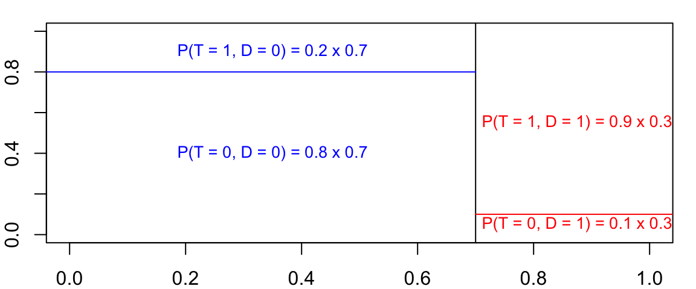

Why and how
Why probability and statistics?
You will learn a wide variety of quantitative methods in PHS 2000 from several different fields, which we hope you will find useful in your research. The common backbone to these is probability and statistics. A strong foundation in these concepts is essential for understanding the motivations and implementation of these methods and for seeing how they relate.
In this tutorial and throughout the course you’ll notice that we attempt to represent as much as possible in mathematical notation. As with any other language, mastering this notation helps you communicate efficiently and precisely. However, there’s no unified language – either in English or notation – across disciplines, and the differences and inconsistencies can be frustrating. One goal of this tutorial is to introduce you to notation and to formalize some concepts you may already be familiar with, in order to minimize this frustration. Representing methods in mathematical notation can be helpful in making connections to theory and to implementation in code, and it can also help both you and the PHS 2000 teaching team see what you do and don’t understand.
If you have taken several statistics courses before, you may be familiar with most or all of the concepts we go through in this tutorial. We nevertheless recommend that you at least read through it so that you have an understanding of what we expect you to be familiar with and to make sure you didn’t miss anything in your previous courses. If you’re not as comfortable with statistics or R or both, take notes as you go along that you can refer back to later. We hope for all of you that this can be a resource that you return to when you encounter difficulties over the course of the next year.
Why R?
There are several great options for statistical software out there, and you may already have mastered one or more of them. In fact, it’s beneficial for you and your career to be fluent in as many different languages as possible. We have chosen R to use in this class for several reasons. First of all, it’s free. You can install it on any and all of the computers you work on. You don’t have to go to the computer lab or use a virtual desktop, and you’ll never have to buy or renew a license. Second, it’s extendable and flexible. This means other people have already written packages which contain sets of functions that implement a number of common and less common statistical methods. If there’s not a package out there that does exactly what you’re looking to do, you can write your own functions to do it. We’ll see over the course of this year that the ability to write our own own code to implement the methods we learn, as well as simulations to test those methods, is a huge help in understanding the theory behind them.
R is extremely flexible and has a number of capabilities that go beyond statistics. In particular, R Markdown documents can be used to make your research reproducible as well as prepare a number of different types of reports, presentations, and more. In fact, this entire tutorial was written using the learnr package in R Markdown.
How to use this tutorial
For this tutorial, you don’t need to install anything. All the coding takes place within windows on this website itself. At some point before class starts you’ll need to install R and its useful companion RStudio if you haven’t already. For help with that you can visit this other tutorial.
To use the code windows on this website, simply type in the code you want to evaluate and then click “Run Code”. (Instead of clicking the button you can also press control+enter on a PC or command+enter on a Mac while your cursor is in the box.) Some boxes already have code that you just need to run (or which has already been run for you), others will require you to add to or modify what’s there, and some are empty and ready for you to fill. They generally only have as much space as you need for a given problem, but will also scroll so you can fill with as many lines of code as necessary (if your code disappears, make sure you haven’t scrolled and hidden it, or try clicking the Start Over button).
It may be helpful to install RStudio now and keep an open R document where you keep track of the code you learn in this tutorial and your own notes. If you want to practice changing the code and running it, it may also be easier to do there than in the code boxes here. Note that the objects you create are not generally available in later code boxes in the tutorial, so if you want more practice you should recreate what you do in a separate R session.
The sections have questions and R exercises designed to check your understanding, either interspersed in the text or in a section at the end labeled Practice. Think of these as a way to test your knowledge and decide for yourself whether you’re ready to move on. None of the questions are graded (and we can’t access your results anyway), you get as many tries as you want, and the solutions (and sometimes hints) are available. (If you only see a hint button, the solution is the last available hint.) You can easily copy and paste the solutions, but we suggest that you type them in yourself instead, as it’s better practice.
If you don’t feel ready to move on, you may want to check out the extra resources links (most of which are videos and practice at Khan Academy) at the bottom of most sections, or the glossary if you’re confused by the terminology. R resources are all lumped together in the final section and we highly recommend checking them out to advance your learning, either during or after you’ve completed this tutorial.
If you come across any errors or have technical difficulties, please notify Louisa, a former PHS 2000 student and Teaching Fellow, at louisa_h_smith@g.harvard.edu.
Intro to R
The first line in following block of code assigns (<-) the value 3 to the object x. Think of x as storing that value: whenever you print x (as the second line does), or use it in a function (as in the third line), it is replaced by the value 3.
x <- 3
x
x + xNote that, after you run the code, there are two lines of output below the code window. These correspond to each of the lines of code that printed something (the first line assigned but did not print anything; lines with <- will generally not produce output, just store, or “save” it to an object).
If you want, you can just use R as a calculator. Whenever you create something but don’t assign it anywhere (i.e., no <-), it will just print out the result. Try multiplying 283 \(\times\) 598 in the box below:
Did you get 169,234? You can do all the normal stuff you’d expect to do with a calculator. Some examples are below, but feel free to play around. Notice first that there are “comments” on several of the lines of code. Everything that follows a # sign is not evaluated by R, so you can use comments to explain what your code does or why you’re doing it.
283 * 598
5 ^ 2 # exponents
log(1) # the default logarithm is the natural log, i.e., ln
exp(0) # e^0
sqrt(25)
(4 + 1) * (8 / 2) ^ 3 # expressions follow normal order of operationsThe above examples were all printed out directly, but we could also assign them to objects, as well as perform functions with them. Objects have case-sensitive names and have certain restrictions like not starting with a number, but other than that, you can basically name things whatever you want. Try to be reasonable, though – you want your code to be readable and logical. (For more good R practices, check out this style guide. You are by no means required to follow it to the letter, but it is always helpful to see how other people format their code.)
Can you figure out what value the objectgrape holds? Write a 4th line of code to print the object and see if you are right.
banana <- 5 ^ 2
apple <- sqrt(banana)
grape <- banana - banana / applegrape2 <- x
# can't assign something to a number4 % 2
# not a functionblah
# we haven't made an object called blahsqrt("4")
# putting the 4 in quotes makes it a character string, not a numberQuick math review
We saw above that we can use R to do math … but you need some mathematical intuition as well! One of the most important mathematical concepts to be familiar with for the purposes of PHS 2000 is how exponents and logarithms relate and the ways in which they can be manipulated.
Most of the time in probability and statistics, we use the natural logarithm \(\ln(x)\), which we often write as \(\log(x)\), and the natural exponential function \(e^x\), which we also write as \(\exp(x)\). Recall that these are inverse functions: \[\exp(x) = y \iff x = \log(y)\] so if one side of an equation is exponentiated, we can always “get out of it” by applying a logarithm to both sides, and vice versa.
When we have a sum inside an exponent, we can decompose this into the product of two exponents: \[\exp(a + b) = \exp(a)\exp(b)\] Similarly, a product inside a logarithm can be written as a sum of logs: \[\log(ab) = \log(a) + \log(b)\] Of course, the same is true of the inverses of addition and multiplication, subtraction and division: \[\exp(a - b) = \frac{\exp(a)}{\exp(b)}\] \[\log\left(\frac{a}{b}\right) = \log(a) - \log(b)\] If we look at these functions on a graph, we can gain some intuition for a few important values you should know. 
We can see that \(\lim_{x\to-\infty} \exp(x) = 0\) and \(\lim_{x\to\infty} \exp(x) = \infty\). Somewhere in between, we have that \(\exp(0) = 1\). This is useful to know since probabilities can only take on values between 0 and 1, so exponentiating a negative number will give you such a value. It is also important to remember that exponentiating something can only give you a positive number (so check your work if that’s not what you get!).
Because of the inverse relationship of these functions, you can only “log” a positive number. Something like \(\log(-1)\) is undefined. We can see that \(\lim_{x \to 0}\log(x) = -\infty\), and \(\log(x)\) increases in \(x\) much more slowly than \(\exp(x)\). Importantly, \(\log(1) = 0\), so \(\log(x)\) for any \(x\) between 0 and 1 will give you a negative number.
You already confirmed above in R that \(\log(1) = 0\) and \(\exp(0) = 1\). Let’s see what we get when we reach the limits of those functions, or when we try to log something outside of its domain. In R, \(\infty\) is represented by Inf, and you can actually use it in functions. It will also be what’s returned to you as soon as a number is “too big”, even if it’s not actually infinite. Until you reach that point, very large (and very small) numbers are represented with scientific notation, so \(\exp(700) = 1.01 \times 10^{304}\) and \(\exp(-700) = 9.86 \times 10^{-305}\), as you can see when you run the code below.
exp(-Inf)
exp(700)
exp(710)
exp(-700)NaN, which stands for “not a number.” Interestingly, according to R, \(\frac{0}{0}\) is not a number but \(\frac{1}{0}\) is infinite, because R is actually returning limits when it returns Inf and -Inf, which is why we can also evaluate something like \(\exp(\infty)\).
log(-1)
0/0
1/0
exp(Inf)Practice
Rearrange these lines of code so that they all run with no errors and the last line prints the value 10.
broccoli <- lettuce * 2 / (tomato ^ 2)
broccoli
carrot
carrot <- broccoli + tomato
tomato <- 2
tomato
lettuce <- 4 ^ tomatotomato <- 2
tomato
lettuce <- 4 ^ tomato
broccoli <- lettuce * 2 / (tomato ^ 2)
broccoli
carrot <- broccoli + tomato
carrotfactorial(3) # = 3!cos(pi) # = -1log(43 * 11 + factorial(3)) - sqrt(exp(pi/7)) * cos(0)Vectors in R
So far we have seen that we can assign a single numeric value to an object. There are many types of objects in R, one of which is a vector.
A vector is a set of values that are all of the same type. Two important characteristics of a vector are its length and its class, or type. So far we have been looking at numeric vectors with length = 1.
Numeric vectors
Here are several numeric vectors of length 6. Run the code and then try playing around with it (substitute different numbers) to see if you can figure out what’s going on with each line before reading ahead.c(3, 52, 12, 875, 354, 3)1:6seq(10, 18, by = 2)seq(10, 20, length.out = 6)rep(32, times = 6)rep(1:2, each = 3)c(). This will be one of your most-used functions. Try creating the vector 932, 283, 194:
c(932, 283, 194)Just like we did with a vector of length 1, if we want to “save” values instead of just printing them out, we can assign vectors of all sizes to an object. We can also check what type of vector we created using the class() function:
obj <- c(4, 29, 40, 9384, 584)
class(obj)We can get numbers in a sequence by putting a : between the first and last number that we want. So to get the vector 100, 101, 102 we would write 100:102.
49, 48, 47:
49:47If we want to count by something other than ones, we can use the seq() function. Much like the : function, it creates a sequence of numbers. Its first argument is the value to start with, the second the value to end with, and then you can choose an option for how to get from one to the other. The by argument specifies how many to count by: seq(0, 100, by = 10) will count from 0 to 100 by 10s. The length.out argument specifies how long we want the resulting vector to be. So if we want to split 32 to 212 into 101 equal values, we would write seq(32, 212, length.out = 101).
seq() function, create the vector 2, 4, 6, 8 and assign it to x, then create the vector 2, 5, 8 and assign it to y. Use the by argument first and the length.out argument next. Before assigning the vectors you may want to just print them out to make sure your code is doing what you expect.
x <- seq(2, 8, by = 2)
y <- seq(2, 8, length.out = 3)The rep() function just repeats whatever its first argument is. The second argument specifies how many times to repeat it. So if we had an object called x, and we wanted to repeat it 3 times, we would write rep(x, times = 3). Note that x itself could be any length. So if we wanted 11, 8, 11, 8 we could write rep(c(11, 8), times = 2). On the other hand, suppose we wanted 11, 11, 8, 8. In that case, we use the argument each to specify how many times we want each element of the vector repeated: rep(c(11, 8), each = 2).
"hello", "hello", "hello" using the rep() function:
rep("hello", times = 3)Character vectors
As you saw just above, we can also have vectors that are not numeric. The vector you created above is an example of the character class. Here’s another:
c("dog", "cat", "fish")You can do a lot with character strings in R, but for our purposes right now they are not super useful because we can’t do math with them. Try adding “dog” + “cat”.
Hint: You should get the error “non-numeric argument to binary operator”.
dog <- 3
cat <- 7
dog + catword <- "word"Logical vectors
We can also have logical vectors. There are only two values to this class:TRUE and FALSE, which must be capitalized (they may also be abbreviated T and F, though this is technically not a best practice).
c(TRUE, FALSE)3 < 5
100 + 1 > 102
2 + 2 == 42 + 2 = 4rep(c(TRUE, FALSE), each = 3)c(1 < 2, 2 < 3, 3 < 4, 4 < 5)rep(4 != 5, times = 5)Instead of a double equals sign in the last one, we have !=. This stands for “not equals”, or \(\neq\). We can also evaluate \(\leq\) and \(\geq\) statements with <= and >=.
FALSE takes on the value of 0 and TRUE takes on the value of 1, so unlike characters, you can do math with them. Guess what each of these will print before running the code.
TRUE * 354(1 > 2) + 3TRUE + FALSEPractice
Change only the (in)equality signs to make the expression equal to 3.(T < F) * (3 < 4) + (0 == 1) * exp("dog" != "cat") + cos(3 > 3) * (6 == 2)(T > F) * (3 < 4) + (0 != 1) * exp("dog" == "cat") + cos(3 != 3) * (6 > 2)4, 4, 4, 5, 5, 5, 4, 4, 4, 5, 5, 5.
rep(rep(seq(...)))rep(rep(seq(4, 5, by = 1), times = 2), each = 3)Some probability rules
It’s important to be familiar with some basic concepts in probability to understand how statistics works and get the most of out PHS 2000. We’ll keep developing skills in R as we start to learn (or review, for some of you) some of these basics in probability and statistics. Some of these ideas will be reiterated in the course, so come back to this tutorial as you encounter them for a quick review.
Frequency definition of probability
If an experiment is repeated \(n\) times under identical conditions, and some event \(A\) occurs \(m\) times, we can define the probability of that event \(P(A)\) as the proportion of times the event occurs as \(n\) approaches infinity: \[P(A) = \lim_{n \to \infty} \frac{m}{n}\] For example, imagine a coin is flipped \(n\) times. Let \(T\) denote the event that ‘tails’ is face up. \[P(T) = \lim_{\# flips \to \infty} \frac{\#\text{ of tails}}{\#\text{ of flips}}\]
We know the probability of flipping ‘tails’ with a fair coin is 0.5, but if we flip a coin a finite number of times, we probably won’t get ‘tails’ exactly half the time. Let’s see how close we get, though. Instead of a real coin, we’ll use R to simulate flipping a coin \(n\) times.
First, we’ll start with some number for \(n\), let’s say 100. We’ll assign this value to an object n so that we can reuse it later – and when we increase \(n\) toward infinity, we won’t need to replace it everywhere. We’ll also need a coin with the appropriate sides, ‘heads’ and ‘tails’.
Create an object n that is a numeric vector of length 1 with a value of 100 and another object coin that is a character vector "heads", "tails".
set.seed(123)
n <- 100
coin <- c("heads", "tails")
flips <- sample(coin, size = n, replace = T)
flips_tails <- flips == "tails"
m <- sum(flips_tails)n <- 100
coin <- c("heads", "tails")Now we need another function to help “flip” the coin. We’ll use the function sample(), which takes a random sample from a given vector. Functions take “arguments” as input. If you don’t know or have forgotten what arguments a function requires, or what it uses as default values if you don’t supply it with anything, you can type ? and the function name to bring up the help file. (This website also has the same information, and more, in a more readable format than shows up in this tutorial.)
?sampleThe sample function takes the arguments x =, size =, replace =, and prob =. Both of the final two have default values (FALSE and NULL, respectively), so we don’t need to specify anything in particular if we are happy with those. The help file gives lots of details about what kinds of values or objects each argument can take, as well as a description of what the function does and useful references and examples.
Returning to our experiment, we’ll give the sample() function the coin vector we created and tell it to sample size = n times. We also need the replace = TRUE argument, which means that it can sample the same value more than once (Or else you’d be limited to 2 flips, a ‘heads’ and a ‘tails’! Try replacing the TRUE with FALSE to see what happens.).
flips <- sample(coin, size = n, replace = TRUE)
# unnamed arguments are evaluated in order, so R knows that x = coinflips object is a character vector of length 100. Here are two useful functions you can use to examine it a little more closely. length() gives you the number of elements in a vector, and head() lets you look at the first 6 elements (very useful when you have a big object and don’t want to print out the whole thing; you can also use tail() to look at the last 6).
length(flips)head(flips)Now we need an easy way to figure out what fraction of the flips are ‘tails’. We already have the denominator, n, we just need m, the number of ‘tails’. Recall that we can check whether things are equal using ==. Imagine that the flips vector only contains two elements: "heads", "tails". If we run flips == "tails" with that object, we’ll get a logical vector of the same length: FALSE, TRUE.
c("heads", "tails") == "tails"
c(53, 19, 392) == 19 # which elements (if any) equal 19?
1:5 > 2 # which integers from 1 to 5 are greater than ?Use == with our original flips object to create a logical vector indicating which elements are ‘tails’. Assign this to an object flips_tails. Use the length() and head() functions to explore that object.
flips_tails <- flips == "tails"
length(flips_tails)
head(flips_tails)Finally we need to count the number of TRUE elements in our flips_tails object. Recall that we can perform mathematical functions on logical values, and TRUE = 1. To count the number of TRUEs, we can just sum over the entire flips_tails vector, since FALSE = 0. We can do that with the sum() function.
sum(flips_tails)(Whenever you are doing something like this, do a quick sanity check. Does this value make sense as the number of ‘tails’ that would be flipped out of 100 coin flips?)
In order to calculate \(\frac{m}{n}\), we need to store that sum as m and divide by n:
m <- sum(flips_tails)
m/nAnd that’s it! Now you can play around with the code to see what happens when \(n \rightarrow \infty\) (though don’t make \(n\) tooooo big or you might crash this tutorial…). How would you change the code to estimate the probability of flipping ‘heads’ instead?
n <- 100
coin <- c("heads", "tails")
flips <- sample(coin, size = n, replace = TRUE)
flips_tails <- flips == "tails"
m <- sum(flips_tails)
m/nAnother experiment
We have 3 balls in a cup, one blue, one red, one green.
Let \(B\), \(R\), and \(G\) denote the event that such a color ball is chosen, respectively.
These events are mutually exclusive: if you picked blue, you didn’t pick red or green. This idea is illustrated by this diagram in which none of the events overlap. 
We can also describe this situation by writing \[P(B \cap R) = 0\] \[P(R \cap G) = 0\] \[P(B \cap G) = 0\] This tells us you can’t pick both at once (the probability of doing so is 0): the events don’t intersect. The \(\cap\) symbol refers to the intersection of those events – whether they “overlap”, or both events could happen at the same time.
So what do we know about \(B\) and \(R\)? Well, there’s no possibility of picking \(B\) and \(R\). However, we might pick \(B\) or \(R\) (i.e., something besides \(G\))!
\[P(B \cup R) = \lim_{n \to \infty} \frac{\#\text{blue }or\text{ red balls}}{n}\]
\(B \cup R\) is the union of the two events – whether at least one of the events occurs.
Whenever two events are mutually exclusive, we can just add their individual probabilities to get the overall probability of either one of them. So we can write
\[P(B \cup R) = P(B) + P(R)\]
In English, we can read this as “the probability of choosing a blue or a red ball is equal to the sum of the probability of choosing a blue ball and that of choosing a red ball.”
See if you can understand what’s going on in this code based on the code for the coin experiment we worked on above. (Some steps have been condensed compared to the coin example; in other words, the intermediate objects weren’t stored, but used directly in functions.)
n <- 10000
draws <- sample(c("Blue", "Red", "Green"), n, replace = T)
sum(draws == "Blue")/n
sum(draws == "Red")/nsum(draws == "Blue")/n + sum(draws == "Red")/nsum(draws == "Blue" | draws == "Red")/nThe | means “or”. Just like before, we’re creating logical values, but now they will be TRUE if either one of the statements is true, and FALSE only if they both are false (in this case, for the elements of draws that are "green").
Compare this with &: if we write draws == "Blue" & draws == "Red", an element of draws will only be TRUE if both statements are true.
You can play around with all the code here. Notice that you’ll get different results every time you run the code. We’re working with finite \(n\), here, and each time we run the sample() function we’re running a random process, so we can different values in the draws object every time.
n <- 10000
draws <- sample(c("Blue", "Red", "Green"), n, replace = TRUE)
sum(draws == "Blue")/n
sum(draws == "Red")/n
sum(draws == "Blue" | draws == "Red")/n
sum(draws == "Blue" & draws == "Red")/nFlipping multiple coins
What if our events aren’t mutually exclusive? Let’s return to a coin flipping experiment, but imagine this time that the experiment is to flip 2 coins.
Let \(H_1\) denote the event that the first coin is a ‘heads’.
Let \(T_2\) denote the event that the second coin is a ‘tails’.
Keep in mind that there are four possible outcomes of the experiment: ‘heads’ & ‘heads’; ‘heads’ & ‘tails’; ‘tails’ & ‘heads’; and ‘tails’ & ‘tails’. The first event of interest, \(H_1\), occurs in the first two outcomes, and \(T_2\) occurs in the second and fourth. The fact that the diagram below (not to scale) has an overlapping area depicts the fact that there exists an outcome (‘heads’ & ‘tails’) in which both events occur – their intersection.

Now they are no longer mutually exclusive: \(P(H_1 \cap T_2) \neq 0\). If we want to know the probability of their union – that is, \(P(H_1 \cup T_2)\), the probability that we get a ‘heads’ first or a ‘tails’ second, we can no longer just add the individual probabilities.
In fact, \(P(H_1) = 0.5\) and \(P(T_2) = 0.5\) (we’re still assuming fair coins), so if we just added the probabilities together, we would have a probability of 1, which doesn’t make sense – it would imply that every single time we flipped two coins, the first would be guaranteed to be a ‘heads’ or the second would be ‘tails’ (i.e., the ‘tails’ & ‘heads’ outcome doesn’t exist). This is an overestimate of the probability of the union because \(P(H_1)\) includes all those times we also get ‘tails’ next, and \(P(T_2)\) includes all those times we also got ‘heads’ first (the overlapping area in the diagram) – but those two situations are exactly the same outcome, so we are double-counting all the times we get ‘heads’ & ‘tails’.
We have to subtract off the doubly-counted intersection: \(P(H_1 \cup T_2) = P(H_1) + P(T_2) - P(H_1 \cap T_2).\) Since \(P(H_1 \cap T_2) = 0.25\) (it occurs in \(\frac{1}{4}\) of the possible outcomes), \(P(H_1 \cup T_2) = 0.5 + 0.5 - 0.25 = 0.75\).
Note that this formula also applies to the case where the events are mutually exclusive, as in our example with the balls. In that case, the last term is just 0, which is why we could write the simpler expression \(P(B \cup R) = P(B) + P(R)\) above.
Challenge: See if you can design an experiment in R to simulate this experiment.
Hint: Try making two flips objects: one for the first coin and one for the second. Remember to name them different things.
Independence, briefly
To recap, to find the probability of either one of two events (their union), we can add their individual probabilities, but if they both can happen at once (they’re not mutually exclusive) we need to subtract off the probability that they both happen (their intersection).
But how do we find the probability that they both happen? It depends on whether the events are independent. Independence essentially means that knowing whether one event happened doesn’t give you any information about another event. In our coins experiment, knowing that one coin landed on ‘heads’ tells you nothing about whether the next coin will be ‘heads’ or ‘tails’. (In fact, believing that it does will lead to the gambler’s fallacy!)
If two events are independent, we can multiply their individual probabilities to get the probability of their intersection: \[P(H \cap T) = P(H) \times P(T)\]
In English, this says that the probability that we get a ‘heads’ first and then a ‘tails’ is the product of their individual probabilities. We can easily see that \(P(H \cap T) = \frac{1}{4}\) because the events occur simultaneously in one of the four possible outcomes, but we also could come to the same conclusion by multiplying the probability of a heads on the first flip by the probability of a tails on the second flip: \(\frac{1}{2} \times \frac{1}{2} = \frac{1}{4}\).
We’ll see the idea of independence show up in more detail later in this tutorial, and again and again in the course, but remember that we can only multiply the overall probabilities like this if events are independent.
Discrete random variables
So far we’ve looked at the probability of a given event or combination of events that result from an experiment. Now we’ll learn how to characterize the probabilities of all the possible outcomes of an experiment: its probability distribution.
Let’s first talk about those possible outcomes. We can assign them numeric values. For example, when we flip a coin once we have two possible outcomes: ‘heads’ (which we’ll assign the value 1) and ‘tails’ (0). Because the value (1 or 0) that we observe comes from some random process (a coin flip), we call it a random variable.
A random variable is the numerical outcome of some random event. That may sound a bit obtuse, but we’ll see plenty of examples here and throughout the course. We generally use capital letters to denote random variables and lower case letters to denote their realizations, or the values that they take on.
Consider the following characterization of the coin flip:
\[ P(X = x) = \begin{cases} 0.5 & \text{for } x = 0 \\ 0.5 & \text{for } x = 1 \\ \end{cases} \]
The random variable that represents the outcome of the coin flip experiment is \(X\). It can take on two possible values: \(x = 0\) (‘tails’) and \(x = 1\) (‘heads’). Each of them has equal probability of occurring (if it were an unfair coin, we could assign probabilities other than 0.5).
Probability mass functions
The function above is called a probability mass function (pmf). For a discrete random variable \(X\), its pmf, often denoted \(f(x)\), is the function that describes the probability that \(X\) takes on each of its possible values: \[f(x) = P(X = x)\]
The fact that the random variable has a discrete probability distribution means that it has a countable number of possible values (we’ll contrast this later with continuous distributions.)
For some distributions we may be able to enumerate those possible values. For example, for an experiment with possible outcomes \({0, 1, 2}\), we may have that: \[f(x) = \begin{cases} 0.1 & \text{for } x = 0 \\ 0.5 & \text{for } x = 1 \\ 0.4 & \text{for } x = 2 \\ \end{cases} \] (We’ll leave implicit the fact that \(f(x) = 0\) for all other values of \(x\).) This describes a discrete probability distribution:
In other cases, we may have a single expression that produces those values. For example, the Poisson distribution can take on any integer value from 0 to infinity. Its pmf, which depends on the rate parameter \(\lambda\) (a constant value, like 1.5 or 50, that helps define a distribution) is:
\[f(x) = \frac{\lambda^x e^{-\lambda}}{x!}\] for \(x = 0, 1, 2, \ldots\). The pmf for the Poisson(2) distribution (we generally put the parameters of a distribution in parentheses following its name, so Poisson(2) means that its rate parameter \(\lambda = 2\)) looks like this:
 though of course the x-axis could continue to infinity, if there were space on your computer screen. It’s pretty pointless to extend it further, though, because the probability \(P(X = x)\) of any given value of \(x\) greater than those shown is very close to 0.
though of course the x-axis could continue to infinity, if there were space on your computer screen. It’s pretty pointless to extend it further, though, because the probability \(P(X = x)\) of any given value of \(x\) greater than those shown is very close to 0.
Graphing these pmfs shows us that they have some similarities. In fact, all pmfs (remember, pmfs are for discrete distributions only), follow certain rules:
The probabilities over all the possible values must sum to 1
None of the probabilities can be < 0 or > 1
Probability distributions in R
Now let’s learn some new R functions in order to help us explore discrete probability distributions and their pmfs.
There is a family of functions for each of many distributions, including the binomial (the coin flip experiment was a special case of this called the Bernoulli) and the Poisson (the Poisson is often used for counts, such as cases of disease).
Each of these distributions has a ‘shortcut’ or abbreviation in R. For example, binomial is binom and Poisson is pois. Some other shortcuts for discrete distributions include geom for the geometric distribution and nbinom for the negative binomial (you don’t have to know these).
To get the pmf for a given distribution at a given \(x\) value, you simply attach the prefix d to the shortcut. The function may require that you specify other parameters of the distribution, like we did with \(\lambda = 2\) in the Poisson above. The parameter associated with the Bernoulli (coin flip) distribution is sometimes denoted \(p\), other times \(\pi\), but in any case it is equal to \(P(X = 1)\). In R, those arguments are lambda = and prob =, respectively.
x <- c(0, 1)x <- c(0, 1)dbinom command (which also takes the size = argument: size = 1 means we’re working with 1 coin, which is the Bernoulli distribution):
fx <- dbinom(x, size = 1, prob = 0.5)
cbind(x, fx) # concatenates vectors in columnsThat looks like the function we saw above! This is the Bernoulli(0.5) distribution.
Now look at the Poisson(2) distribution (again, \(\lambda = 2\)). We’ll look just at values through 15.
First create thex object with the possible values of the Poisson distribution (again, just 0 through 15). Then create the fx object using the appropriate function (you will need the argument lambda = 2). Print out the values and see whether they match the graph from earlier (just eyeball them).
x <- 0:15
fx <- dpois(x, lambda = 2)
cbind(x, fx)Now look at some graphs of pmfs as you change the distributions and the parameters. You will use the pmf_func() function (which was created for this tutorial and is not included with R, so you won’t be able to use it outside the tutorial), which takes arguments x = and fx =, like you created earlier. I’ve started you off with one pmf; play around with the first two lines of the code to create new graphs. (You may want to look up the distributions on Wikipedia to get an idea of what values they can take on and what the parameters mean; the pages have very helpful sidebars. You can also find the help files for each distribution here, which will help you figure out the shortcuts and know which extra arguments (like prob or lambda) the functions require.)
x <- 0:10
fx <- dgeom(x, prob = .3)
pmf_func(x, fx)
Practice
We saw earlier that the pmf for the Poisson distribution is \[f(x) = \frac{\lambda^x e^{-\lambda}}{x!}\] Use that expression to calculate \(f(3)\) (again with \(\lambda = 2\)) in R. Does this match up with what you get when you use R to calculate the value with the appropriate function? (Hint: it should also match up with the graph and table above.) Try with some other values of \(x\) and \(\lambda\).
lambda <- 2
x <- 3
lambda ^ x * exp(-lambda) / factorial(x)
dpois(x, lambda)Instead of writing out the Bernoulli pmf as a piecewise function \[ f(x)= \begin{cases} 1 - p & \text{for } x = 0 \\ p & \text{for } x = 1 \\ \end{cases} \] where \(p\) is the probability parameter (0.5 for a fair coin), we can condense it into a simpler expression, much like that for the Poisson pmf. That function is of the form \(f(x) = a^bc^d\), where \(a,b,c,d\) are functions of \(x\) and \(p\). First take some time to think about what could replace \(a,b,c,d\) in order to produce the same values as the piecewise function, then answer the question below.
More resources
For more info about random variables, watch this; the several videos that follow go into more depth about discrete distributions.
Cumulative distribution functions
Another way we can characterize probability distributions is via their cumulative distribution functions (cdfs). While only discrete distributions have pmfs (later we’ll see what continuous distributions have instead), both discrete and continuous distributions have cdfs, defined as
\[F(x) = P(X \leq x)\]
Returning to our example of the fair coin, we can plug in the two values that the random variable \(X\) can take on:
\(F(0) = P(X \leq 0) = 0.5\)
\(F(1) = P(X \leq 1) = 1\)
We could in fact plug in any value of \(x\): the cdf of a discrete distribution is a step function with jumps at each of its possible realizations:
This may seem kind of strange. It is essentially just telling us that the probability of a ‘tails’ (\(P(X \leq 0)\), since ‘tails’ is 0) is 0.5 and the probability of a ‘heads’ or a ‘tails’ (\(P(X \leq 1)\)) is 1. The probability of neither ‘heads’ nor ‘tails’ (\(P(X < 0)\)) is of course 0. We aren’t getting any new information from a cdf that we couldn’t get from a pmf – we’ll see directly how they relate later – but it turns out that cdfs are very useful.
Just like pmfs, cdfs follow certain rules:
As \(x\) approaches \(- \infty\), \(F(x) = 0\)
As \(x\) approaches \(\infty\), \(F(x) = 1\)
\(F(x)\) is non-decreasing (it never gets smaller as \(x\) increases)
Confirm that the graph above adheres to these rules. Then think about how these rules connect to those we saw for pmfs (we’ll look at the connection more explicitly later).
We know that no probability \(P(X = x)\) can be less than 0 or greater than 1; we also know that the total probability over all values of \(x\) must equal 1 exactly. The fact that the probabilities \(P(X = x)\) can’t be negative tells us why the cdf must be non-decreasing – we can never decrease in cumulative probability when moving from left to right along the x-axis of the cdf. This also explains why the lower limit is 0. The upper limit must be 1 because the total probability \(P(X \leq x)\) must be 1 at its most extreme value (possibly approaching \(\infty\), though for the fair coin the largest possible value the random variable can take is only 1).
Another example
We briefly looked at a distribution defined by \[f(x) = \begin{cases} 0.1 & \text{for } x = 0 \\ 0.5 & \text{for } x = 1 \\ 0.4 & \text{for } x = 2 \\ \end{cases} \] What does \(F(x)\) look like? (Likepdf_func(), cdf_func() is a special function for this tutorial that you won’t find in base R. It takes the same arguments as pdf_func(), that is, the values \(P(X = x)\) from the pmf.)
x <- 0:2
fx <- c(0.1, 0.5, 0.4)
cdf_func(x, fx)
Try replacing the values above with those from other pdfs we’ve looked at (you’ll need to change both x and fx, and make sure they’re the same length). Confirm that they meet the above criteria. Then try the ones you considered in last section’s multiple choice question that didn’t correspond with true probability distributions, and see that they don’t follow the rules.
Lots of coins
Now let’s look at an example in which a cdf may be particularly useful. Instead of flipping one coin, imagine we are flipping ten coins and counting the number of ‘heads’ (this is the binomial distribution with parameter \(n = 10\), or size = 10 in R language). Again we’ll call this random variable (the total number of ‘heads’ in ten flips) \(X\).
If you pay $5 to enter the game, your friend agrees to pay you $1 for every ‘heads’ you flip (you trust that your friend is playing with a fair coin). You want to know what the chances are that you’ll lose money on the game, that is, that you’ll get a value of \(X\) that’s less than 5.
The cdf is useful here because we want to know the probability of a set of outcomes: in this case, the outcomes \(X = 0\), \(1\), \(2\), \(3\), or \(4\). If \(X = 5\), we come out even, and if \(X > 5\), we come out ahead.
In order to calculate this probability, we need to know \(P(X = 0)\), \(P(X = 1)\), \(P(X = 2)\), \(P(X = 3)\), and \(P(X = 4)\). Only one of these things can happen in a given game – they are mutually exclusive – so we can just add their probabilities to find the probability that any one of them happens. \[P(X \leq 4) = P(X = 0) + P(X = 1) + P(X = 2) + P(X = 3) + P(X = 4)\] We could also write this \[P(X \leq 4) = \sum_{x = 0}^4 P(X = x)\] This tells us the relationship between the pmf and the cdf. For a discrete random variable which can take on a minimum value of 0, as in our scenario and many other distributions, \(F(x) = \sum_{i = 0}^x f(i)\).
If we look at a graph of the cdf for our coin game, we can see what’s going on. At each jump (from an open circle to a closed circle), we are simply adding \(P(X = x)\), or \(f(x)\), for that \(x\)-value.
 We can see from the graph that we have less than 40% chance of losing money by playing the game. Maybe you’re willing to take that risk, maybe you’re not. Or maybe you can look at the cdf and decide to negotiate with your friend to pay only $4 to enter, which would just about halve your chances of losing out.
We can see from the graph that we have less than 40% chance of losing money by playing the game. Maybe you’re willing to take that risk, maybe you’re not. Or maybe you can look at the cdf and decide to negotiate with your friend to pay only $4 to enter, which would just about halve your chances of losing out.
Cumulative distribution functions in R
In the last section we saw that there is a class of functions in R that begin with d, followed by an abbreviation for the name of a probability distribution. We used these to find values from the pmfs for those distributions. Now will see that the functions for cdfs operate similarly, only these begin with p.
cbind() function to print out the x and Fx values to confirm they match what we have for the cdf above.
x <- c(0, 1)
fx <- dbinom(x, size = 1, prob = 0.5)
Fx <- pbinom(x, size = 1, prob = 0.5)x <- c(0, 1)
fx <- dbinom(x, size = 1, prob = 0.5)
Fx <- pbinom(x, size = 1, prob = 0.5)
cbind(x, Fx)x <- 0:10
Fx <- x <- 0:10
Fx <- ppois(x, lambda = 2)
cbind(x, Fx)
Like we said earlier, the coin game in the last example fits the binomial probability distribution. The binomial distribution is just the sum of independent Bernoulli trials, or individual coin flips. When we previously used the binom functions, we used the argument size = 1 because we were only flipping one coin. To fit our example, we would use the argument size = 10. Use the code box below to figure out the exact probability that you would lose money (remember that it should be a bit less than 0.4, based on our eyeballing of the graph above). Then sum across the appropriate values of the pmf to make sure you get the same answer, to show yourself that the cdf and the pdf give you the same information.
pbinom(4, size = 10, prob = 0.5)
dbinom(0, size = 10, prob = 0.5) + dbinom(1, size = 10, prob = 0.5) +
dbinom(2, size = 10, prob = 0.5) + dbinom(3, size = 10, prob = 0.5) +
dbinom(4, size = 10, prob = 0.5)Marginal vs. conditional
Let’s move away from coins and balls and start thinking in terms of examples that are more similar to those that may appear in your work.
Let \(D \in \{0, 1\}\) denote the absence or presence of disease in some individual. This means that \(D\) is a random variable with two possible values (0 and 1), meaning that it must have a discrete distribution. In particular, the only possible distribution a binary variable like \(D\) can have is Bernoulli (just like the coin flip!).
(If you aren’t really feeling this idea that disease is a random flip of a coin, know that we will be of course looking at factors that explain the probability of disease or other outcomes, but we assume that even once we’ve accounted for these factors of interest, there is some randomness left over that we can’t or don’t attempt to explain.)
Imagine that we are looking at a population in which the disease is pretty common: any given individual has a 30% chance of having it. This means we can define the probability mass function:
\[f(d) = \begin{cases} 0.7 & \text{for } d = 0 \\ 0.3 & \text{for } d = 1 \\ \end{cases} \]
or, because this is a Bernoulli random variable, we saw we could write the pmf \(f(d) = 0.3^d0.7^{1 - d}\). Before moving on, think about how you would write out the cumulative distribution function.
A second random variable
Now let’s imagine we have a test to detect the presence of the disease (but, like most tests, it’s not completely accurate). We’ll say \(T\) is the random variable, also Bernoulli distributed, where a value of 1 indicates that an individual tests positive and 0 indicates a negative test.
Let’s try to describe the probability that an individual tests positive for the disease: \(P(T = 1)\). What information might you have that could affect how you describe this probability?
Do you think the probability of testing positive, \(P(T = 1)\) has anything to do with the probability of actually having the disease, \(P(D = 1)\)?
We hope so, or else the test is pretty worthless! These random variables are not independent. We saw before that independence means that information about one event doesn’t tell you anything about another event. But in this situation, testing positive tells you something about whether an individual has the disease – that they are more likely to have it than if they tested negative.
Recall that two events \(A\) and \(B\) are said to be independent if \[P(A \cap B) = P(A) \times P(B)\]
If this were the case for our disease example, we could find the probability that someone both has disease and tests positive simply by multiplying the marginal probability of the disease by the marginal probability of testing positive: \[P(D = 1, T = 1) = P(D = 1) \times P(T = 1)\]
(We refer to probability of the intersection of two events \((D = 1) \cap (T = 1)\) as their joint probability, and we can separate the two with a comma instead of using the \(\cap\) symbol.)
This equality would only hold if whether you test positive has nothing to do with whether you have disease – if it’s constant no matter what.
Marginal vs. conditional probabilities
\(P(T = 1)\) is a marginal probability: it tells us the probability of testing positive overall in the population, ignoring disease status. We’ve said \(P(D = 1) = 0.3\) in this population. Will \(P(T = 1)\) be the same in a population where \(P(D = 1) = 0.1\)? What about if \(P(D = 1) = 0.7\)?
\(P(T = 1)\) clearly depends on the distribution of disease in the population, because whether people test positive depends on whether they have the disease or not.
Since \(D\) can take on two values, we have two conditional probabilities:
\(P(T = 1 | D = 1)\)
\(P(T = 1 | D = 0)\)
Read these as “the probability that \(T = 1\) given \(D = 1/0\)”, or “conditional on \(D = 1/0\)”. Instead of the overall probability in the population, these values are probabilities that only apply to a subset of the population, in this case defined by the presence or absence of disease. We would expect that \(P(T = 1 | D = 1) > P(T = 1 | D = 0)\) if the test is at least somewhat effective.
Let’s say that \(P(T = 1 | D = 1) = 0.9\) and \(P(T = 1 | D = 0) = 0.2\).
Conditional probabilities behave like unconditional probabilities! We need the conditional probabilities (given a single condition, like \(D = 1\)) to add up to 1 over all the possible values of the random variable \(T\). So \(P(T = 0 | D = 1)\) must be 0.1, and \(P(T = 0 | D = 0)\) must be 0.8.
However, the probabilities \(P(T = 1 | D = 1)\) and \(P(T = 1 | D = 0)\) aren’t required to relate to each other in any particular way (though we are often trying to investigate such relationships, and in this case we can make a reasonable assumption about which is greater).
We’ll see later how we can use all our information to calculate the marginal probability \(P(T = 1)\).
Tables in R
Let’s see how we could look at this data in R.
Imagine we have access to the entire population’s disease and test status. In that case, the proportion of people with disease will correspond with the probability that any randomly chosen one of them has disease. In the real world, we’ll only have access to a sample and will have to estimate these probabilities – this is why we need statistics, but we’ll get to that later.
Since \(P(D = 1) = 0.3\), let’s create a population in which exactly 30% of observations have \(D = 1\) and 70% \(D = 0\). Using a population size of \(n = 100\), create a vector disease with this data.
n <- 100
disease <- c(rep(1, n * 0.3), rep(0, n * 0.7))
test <- c(rep(1, n * 0.3 * 0.9), rep(0, n * 0.3 * 0.1), rep(1, n * 0.7 * 0.2), rep(0, n * 0.7 * 0.8))
dat <- data.frame(disease, test)n <- 100n <- 100
disease <- # try using the rep() function twice within the c() functionn <- 100
disease <- c(rep(1, n * 0.3), rep(0, n * 0.7))How can we confirm that \(P(D = 1) = 0.3\) in our population? Well, the mean of a binary variable is its probability. Taking the mean of the variable in this population means summing up all the 0/1 values and dividing by \(n\) – this gives us the proportion that are equal to 1. We did this when we were looking at coin flips; now we’ll use the mean() function to shorten our code.
mean(disease)We also know that \(P(T = 1 | D = 1) = 0.9\) and \(P(T = 1 | D = 0) = 0.2\). I’ll provide you with the vector test which has the appropriate values (1s and 0s) for our population’s test status. Look at the vector to make sure it looks like what you’d expect.
length(test)
head(test)It’s not a great idea to have your data hanging out in separate individual vectors, though. We want it all in the same dataset so that we can make sure that the first person’s data is all together, as is the second person’s, etc. The type of object that we’ll use is called a “dataframe” in R (notice the function data.frame() has a period in it). You can combine vectors of any class into a dataframe, as long as they’re all the same length. We’ll call our data dat (you don’t want to use the name data because it’s the name of a function in R).
dat <- data.frame(disease, test)
head(dat)Again we can look at the first chunk of our data using the head() function, but another function is often more useful for getting an idea of what’s in a dataframe: summary().
summary(dat)This command tells us the names of our variables as well as some summary statistics about them (when we have datasets that contain non-numeric data, it will also tell us about what types of variables we have). It’s helpful to make sure everything is what you would expect and in the form you want it.
When we want to reference a specific variable’s values in a dataframe, we use the format dataframe$variable. To confirm that the data on disease status in our dataframe is the same as we started with, run the command mean(dat$disease) in the window below. The vector disease you created before is the exact same vector you get when you call dat$disease. You can also use other functions you know directly on that variable, such as head() and length().
Now let’s confirm that \(P(T = 1 | D = 1) = 0.9\) and \(P(T = 1 | D = 0) = 0.2\). There are a couple of ways we can do that: tables and subsetting. Let’s start with tables.
The table() function makes a frequency table with whatever variables we include in the parentheses. Remember that since they’re in a dataframe, we need to use the $ format to access them:
table(dat$disease)When we just include one variable in the parentheses, we learn how many observations there are with each of the values of the variable. However, for our purposes, since we are looking at one variable within strata of another, we can start to get what we’re looking for by putting both variables in the parentheses:
table(dat$disease, dat$test)This table would be more useful with a couple of changes. Let’s first add the marginal totals. To do that we use the function addmargins(), which operates on a table object (so we create the table inside the parentheses).
addmargins(table(dat$disease, dat$test))prop.table() operates on a table object (so you can’t pass it the variables directly – don’t make that common mistake) and converts the values to proportions. Without extra arguments, these are calculated to sum to 1 across all the cells, but you can also use the argument margin = with a value of either 1 (by row) or 2 (by column) in order to calculate row or column proportions. Experiment with this function and the margin = argument. What code would you use to find \(P(T = 1 | D = 1)\) and \(P(T = 1 | D = 0)\)?
prop.table(table(dat$disease, dat$test), margin = 1)Tables are easy when the data are discrete, especially with only two possible values. In general, though, if we want to know something about a subset of the population (like the conditional probabilities we’ve been looking at, but also things like a conditional median or maximum value), we can subset the data directly and perform whatever function we want on that portion of the dataset.
The subset() function can take as a first argument a dataframe, and as the second (subset =) a logical expression that will evaluate to TRUE for those observations we want to keep. (It can also be used to select the variables we want to retain with the select = argument. Look at the help file for more details and examples.)
test variable, but this time within each of the new dataframes separately.
d1 <- subset(dat, subset = disease == 1)
d0 <- subset(dat, subset = disease == 0)
mean(d1$test)
mean(d0$test)Does this match what you got before? Note that we now have three datasets hanging out in our R “environment”: the full data in dat, and the two subsets of the data in d1 and d0. In R you can work with many datasets and objects at the same time – you just need to make sure you don’t get them mixed up!
More resources
There is a lot of great information about conditional probabilities here.
Total probability and Bayes
One very important skill is manipulating conditional and marginal probabilities. Think of it like a puzzle: you have all the pieces you need, and you need to figure out how to put them together to answer the question you want.
We have several pieces of information from the previous section. We know that \(P(D = 1) = 0.3\), that \(P(T = 1 | D = 1) = 0.9\), and \(P(T = 1 | D = 0) = 0.2\) (remember that since \(D\) and \(T\) are binary variables, we also know \(P(D = 0)\) and \(P(T = 0| D = d)\) as well).
Now, what if we want to know the marginal probability \(P(T = 1)\)? For example, maybe we have a second test that is used after a positive first test to confirm disease. We want to know how many of these second-round tests to order, which requires knowing how many people overall will test positive in the first place.
To illustrate, we began with two groups of people, the diseased and non-diseased, who take up these proportions of the population: 
Then, within each of the two strata, we came up with conditional probabilities for testing positive and negative. Notice that within the two conditioning statements (i.e., on both the left- and right-hand sides of the diagram), the probabilities sum to 1. This should let us know intuitively that we can’t add across strata; for example, to find \(P(T = 1)\), we can’t just add \(P(T = 1 | D = 0) + P(T = 1 | D = 1)\).

Instead, we have to “weight” the conditional probabilities by the respective size of their strata before we can add them. The size of the strata is just \(P(D = d)\). “Weighting” by these marginal probabilities gives us joint probabilities of \(T\) and \(D\) (recall that the joint probability is the probability of the intersection of two values of \(T\) and \(D\)): \[P(T = t, D = d) = P(T = t | D = d)P(D = d)\]
The calculations for each combination of \(T\) and \(D\) are shown below. Confirm on your own that these values all sum to 1.
 Now we can sum the joint probabilities that involve \(T = 1\) over all the possible values of \(D\) to calculate the marginal probability of \(T = 1\):
\[\begin{equation*} \begin{split} P(T = 1) & = \sum_{d = 0}^1 P(T = 1, D = d) \\ & = \sum_{d = 0}^1 P(T = 1 | D = d)P(D = d) \\ & = 0.9 \times 0.3 + 0.2 \times 0.7 \\ & = 0.41 \end{split} \end{equation*}\]
Decomposing a marginal probability into the sum of conditional probabilities given another variable is called the law of total probability. Note that we could solve for the marginal probability of \(T = 1\) if we knew its conditional probabilities given any other variable, not just disease. We can write the law of total probability generally as \[P(X = x) = \sum_{y \in \mathcal{Y}}P(X = x | Y = y)P(Y = y)\] where the notation \(y \in \mathcal{Y}\) just means that we are summing over all the possible values that \(Y\) can take on.
This idea of “weighting” by probabilities will come up again later, when you’ll learn about expectations, including mean and variance. You’ll also see then how the same concept comes into play with continuous random variables, where these ideas also hold.
Bayes’ theorem
We saw above that we can decompose a joint probability into the product of a marginal and a conditional probability: \(P(T = t, D = d) = P(T = t | D = d)P(D = d)\). This statement told us that It turns out the same holds true even if we switch which variable is in the conditioning statement: \(P(T = t, D = d) = P(D = d | T = t)P(T = t)\). In words, we can think of this as the probability of some combination of testing and disease status being equal to the product of the probability of disease given some test result and the overall probability of that test result.
We can use the fact that these two probabilities are equal: \[P(T = t | D = d)P(D = d) = P(D = d | T = t)P(T = t)\] to come up with Bayes’ theorem: \[P(T = t | D = d) = \frac{P(D = d | T = t)P(T = t)}{P(D = d)}.\]
Bayes’ theorem can be used to “switch” what we’re conditioning on in a probability. In some situations, it may be useful to know what the probability of testing positive given disease is (this is also known as sensitivity). In other situations, it may be useful to know what the probability of having disease given a positive test is (this is also known as positive predictive value). While the former may be useful while developing and comparing tests, the latter is particularly useful to a patient who has just tested positive. If we want to let this patient know how worried they should be, we can simply switch the condition: \[P(D = d | T = t) = \frac{P(T = t | D = d)P(D = d)}{P(T = t)}.\]
Remembering that we can decompose the marginal probability in the denominator of Bayes’ law, we can write things more generally as: \[P(Y = y | X = x) = \frac{P(X = x | Y = y)P(Y = y)}{ \sum_{y' \in \mathcal{Y}}P(X = x | Y = y')P(Y = y')}\] Note the notation in the denominator. To distinguish the values of \(Y\) in the summation from the particular value \(y\) of interest, we can denote them \(y'\). We do sum over that particular value \(y\) as well, though, because we are summing over all the possible values!
Return to the R data
We’ll look back at the data we used in the previous section to confirm that everything we learned in this section holds true.
We used the fact that \(T\) and \(D\), or test and disease, were binary variables and that we were interested in the proportions equal to 1 to easily find those proportions in R with the mean() function. However, what if we want to find the probability of testing negative in the population, \(P(T = 0)\)? OK, we could easily subtract \(1 - P(T = 1)\) using the code 1 - mean(dat$test), but when we’re looking at variables that aren’t binary, we won’t be able to do that.
We actually already saw the solution to this problem in the section on probability rules, but here we’ll formalize it a little. Whenever we want to turn something into a binary 0/1 variable, we can use indicator notation, which uses \(I()\) to turn values that make whatever statement is in the parentheses true into 1, and anything that is false to 0. When we summed over the series of \(n\) coin flips earlier in this tutorial using the R code sum(flips == "tails"), we could have written something like this: \[\sum_{i = 1}^n I(flip_i = heads)\] Like the R code, which uses == to turn a statement into TRUE or FALSE values, which are then summed as if they have the values 1 or 0, this expression tells us to look at each of the \(n\) flips, indexed by \(i\), and evaluate whether it was heads or not: if yes, it’s equal to 1, if not, it’s 0.
We can therefore use the mean() function to find \(P(D = 0)\). We want to calculate \[\frac{1}{n} \sum_{i = 1}^n I(D = 0).\] In R, we could do this as follows:
mean(dat$disease == 0)test = 1 in the dat dataset: by calculating it directly, and by using the law of total probability to calculate all the component parts and sum them. Using only R commands (and no probabilities that you’ve previously been given), calculate \(P(T = 1)\) and \(\sum_{d = 0}^1 P(T = 1 | D = d)P(D = d)\) to confirm they’re the same.
mean(dat$test)d1 <- subset(dat, subset = disease == 1)
d0 <- subset(dat, subset = disease == 0)d1 <- subset(dat, subset = disease == 1)
d0 <- subset(dat, subset = disease == 0)
mean(d0$test)*mean(dat$disease == 0) + mean(d1$test)*mean(dat$disease)We can use indicator notation with any kind of true/false statement. Let’s say we also have information on age, and we want to know if disease prevalence differs between young (< 50 years old) and old (50+ years old). Age in years is now stored in the dat dataset in the variable age. First use the coding window to explore the age distribution of the population and then answer the questions below.
set.seed(6789)
n <- 100
disease <- c(rep(1, n * 0.3), rep(0, n * 0.7))
test <- c(rep(1, n * 0.3 * 0.9), rep(0, n * 0.3 * 0.1), rep(1, n * 0.7 * 0.2), rep(0, n * 0.7 * 0.8))
age <- round(100*runif(n))
dat <- data.frame(disease, test, age)
dat$age <- ifelse(dat$disease, dat$age + 5, dat$age)Hint: Remember the dollar sign format: the variable is accessible with the code dat$age. What function have you learned that will answer both of the following questions at once?
Now let’s use our R and Bayes’ theorem skills to find the disease prevalence among the “old” portion of our population. We’ll denote age in years with \(A\), so that we can write the probability we’re looking for: \[P(D = 1 | A \geq 50)\] Before looking below, practice using Bayes’ theorem to write out that conditional probability in terms of other probabilities you may have.
We might use Bayes’ theorem in this situation if we are doing a case-control study, which would allow us to estimate \(P(A \geq 50 | D = 1)\) (i.e., the proportion of “old” people among the cases), and we already know the overall prevalence of disease (\(P(D = 1\))) and age distribution (specifically, \(P(A \geq 50)\)) in the population. Then we can combine these pieces of information to get \[P(D = 1 | A \geq 50) = \frac{P(A \geq 50 | D = 1)P(D = 1)}{P(A \geq 50)}\] Does this match what you wrote down?
As for finding these quantities using R, we can go about this a number of ways. We’ve already seen two ways to get \(P(D = 1)\), using the prop.table() and table() functions, or using the mean() function. Use both of these methods to find \(P(A \geq 50)\).
mean(dat$age >= 50)mean(dat$age >= 50)
prop.table(table(dat$age >= 50))When we used the mean() function, what we were really calculating could be written out like this: \[\frac{1}{n}\sum_{i = 1}^n I(A_i \geq 50)\] We’re summing up the number of people in the population whose age is greater or equal to 50, and dividing by the total number of people. Using that same idea, think about how we could find \(P(A \geq 50 | D = 1)\) before reading on.
addmargins(table(dat$age >= 50, dat$disease))where 19 is the number over 50 and with disease (\(\sum_{i = 1}^{n_1} I(A_i \geq 50 \cap D = 1)\)) and 30 is the number of diseased people, our denominator \(n_1\).
Obviously we could have more easily calculated the proportion \(\frac{19}{30} = 0.63\) using theprop.table() function. Recall that we need to use the margin = argument to find a conditional probability. Try it out below:
prop.table(table(dat$age >= 50, dat$disease), margin = 2)Along with using tables, we could also use the sum() function to come up with the values 19 and 30. See if you can do so. Remember from the probability rules section how we can find the intersection \(\cap\) of two events.
sum(dat$age >= 50 & dat$disease == 1)
sum(dat$disease == 1)Finally, we could of course also calculate this conditional probability by using the mean() function only in the subset of the population for whom \(D = 1\). You’ve already made that subsetted dataset. Confirm that \(P(A \geq 50| D = 1)\) using this method as well.
mean(d1$age >= 50)Finally, put all the pieces together to calculate \(P(D = 1 | A \geq 50)\), using only R functions and none of the values you’ve previously calculated. You may want to make some objects along the way to store the different pieces. Also calculate the probability directly using the mean() function in the subset of the population greater or equal to 50.
pAgivenD <- sum(dat$age >= 50 & dat$disease == 1) / sum(dat$disease == 1)
pD <- mean(dat$disease)
pA <- mean(dat$age >= 50)
pAgivenD * pD / pA
above50 <- subset(dat, age >= 50)
mean(above50$disease)Quick detour into calculus
Many classes on probability and statistics require multivariable calculus. That is certainly not a prerequisite for PHS 2000. However, a tiny bit of calculus will show up at some points during the year. You won’t need to solve complicated integrals or anything, just understanding the relationship between integrals and derivatives and what they can tell us about functions. We’ll review the concepts briefly here, but if you feel like you might need more review, check out the links below. (If you have never taken calculus, don’t run to sign up for a whole class. See if you can get what you need from this content and perhaps some of the links, and contact us if you have any questions or want more references.)
Derivatives
The basic idea of a derivative is that it describes the rate of change of a function. If the function we’re looking at is \(g(x)\), then there are a couple of ways we usually notate the first derivative of \(g(x)\), which we’ll use interchangeably: \[g'(x) = \frac{d}{dx}g(x)\] Both equivalently tell us that we are looking at the function \(g(x)\) and taking the first derivative with respect to the variable \(x\). That means that as \(x\) changes, we want to know how much \(g(x)\) changes. This is just the slope of \(g(x)\) at a given value of \(x\).

As we can see above, when the first derivative is 0, the function may have reached a maximum. (This is the case if \(g'(x) > 0\) just prior to the value at which \(g'(x) = 0\), and \(g'(x) < 0\) just after. Confirm for yourself that this is true on the graph above.)
It also may have reached a minimum, as at \(x = 0.5\) on the graph below.
This tells us that if we want to find the value of \(x\) that maximizes or minimizes a function, we can take its first derivative \(g'(x)\) and figure out where \(g'(x) = 0\).
Let’s find a maximum. If \(g(x) = -2x^2 + x - 3\), then \(g'(x) = - 4x + 1\) (if you’re not sure how we got that, you can review the power rule, but you won’t be asked to compute derivatives, only understand why you might do so).
Let’s confirm by looking at the graphs of \(g(x)\) and \(g'(x)\).

Of course, without looking at the graph, we didn’t actually know whether the point at which \(g'(x) = 0\) was a minimum or a maximum. We could differentiate again to check whether the second derivative was positive (a minimum) or negative (a maximum), but we don’t need to practice that (though you can if you want to!).
The important thing is that you understand that one way to maximize a function is to differentiate it. Specifically, the steps are: find the first derivative, set it to 0, and solve (then check the second derivative to confirm it’s a maximum).
Sometimes, however, functions are hard to differentiate or finding roots for their derivatives is difficult. In that case we may use other methods to maximize them. We won’t go into details, but imagine climbing the function above (\(g(x) = -2x^2 + x - 3\)) like a hill. Every few steps you calculate the slope in the small area around you. If the slope is getting closer to 0 (getting flatter), you keep going forward; if you’re going downhill, you turn around and head back. You keep walking around and checking the slope around you, moving closer to where it’s exactly 0, until you’re at the top of the hill and you’ve maximized the function.
Integrals
Another way we might want to describe a function is by the area under its curve. Whereas the derivative gave us an idea of the instantaneous rate of change of a function, an integral tells us how much cumulative space a function is covering (in terms of distance from the x-axis) as x gets larger.
For example, in the graph of \(f(x) = 2x^3 + 3x^2 + 4\) below, the area in blue is represented by the integral \[\int_{-2}^{2} 2x^3 + 3x^2 + 4 \; dx\] 
The values at the top and bottom of the integral sign are those between which we’re computing the integral. We could integrate over the whole function, from \(- \infty\) to \(\infty\), or choose other limits of integration:

\[\int_{1}^{3} 2x^3 + 3x^2 + 4 \; dx\]
If a function is non-negative, like the above function \(f(x) = 2x^3 + 3x^2 + 4\) is between \(x = -2\) and \(x = 3\) (the function is always above the x-axis), then, if we set a constant lower limit, the integral increases with \(x\). What this means is that \[\int_{-2}^{-1} 2x^3 + 3x^2 + 4 \; dx \leq \int_{-2}^{0} 2x^3 + 3x^2 + 4 \; dx \leq\int_{-2}^{1} 2x^3 + 3x^2 + 4 \; dx \leq \int_{-2}^{2} 2x^3 + 3x^2 + 4 \; dx\] and so on. On the graph, the area under the curve can only accumulate area, so the integral evaluated at greater and greater upper limits can only increase.
Fundamental theorem of calculus
The fundamental theorem of calculus relates the two concepts of differentiation and integration. If we have a function \(f(x)\) over the interval \([a, b]\), we can define another function \[F(x) = \int_a^x f(x) \; dx\] What this means is that, for any \(x\) in \([a, b]\), our new function \(F(x)\) is the integral of \(f(x)\) from the beginning of that interval to the point \(x\).
We can then say that \[f(x) = F'(x)\] That is, the function inside the integral is the first derivative of the function that was defined as the integral. In other words, derivatives and integrals work like inverse operations. We’ll see in the next section how this relationship helps us understand probability distributions.
More resources
Here is a lot of information about derivatives. You don’t need more than the first few videos. Same with this intro to integrals. Watch the video on antiderivatives and indefinite integrals from this page and some of those on this page to understand the link between derivatives and integrals.
Probability density functions
Continuous probability distributions
With discrete distributions, we defined the probability mass function (pmf) as \(f(x) = P(X = x)\). However, we have left the corresponding function for continuous distributions a mystery… until now.
A continuous random variable can take on any value within a given interval. Unlike discrete distributions, for which we could list the possible values (even if they go off to infinity, like the Poisson distribution, we can imagine that we could just keep counting and counting…), the possible values of a continuous distribution aren’t countable. For example, consider the uniform(0, 1) distribution, which has equal probability over the interval between 0 and 1. What’s the first value that comes after 0?
That’s of course not a question that you can answer, though it may provide some intuition to the following statement: for a continuous random variable, the probability of any given value is 0. That is, \(P(X = x) = 0\) for all \(x\). If you are drawing from the Poisson(2) distribution we keep looking at, some of the time you’ll get values of 0 or 1, for example. But if you are drawing from a uniform(0, 1) distribution, the probability that you’ll get exactly 0.5 is 0.
Because of this, we need a function that differs from the pmf: the probability density function, or pdf. We can’t define the pdf the same way we defined the pmf for a discrete variable. We’ll still refer to it as \(f(x)\), but its values aren’t probabilities, they’re “densities”. Unlike a probability, a probability density can have values that are greater than 1! You can think of them as relative probabilities. Values of \(x\) with larger densities are more likely than those with smaller densities.
Let’s look at the pdf of the standard normal distribution. This is our first continuous probability distribution: the normal, or Gaussian, distribution. This is the one with the famous bell-curve shape.
A normally distributed random variable \(X \sim N(\mu, \sigma^2)\) is defined by two parameters: its mean (\(\mu\)) and its variance (\(\sigma^2\)).
What does that mean? The \(\sim\) symbol tells us how the random variable \(X\) is distributed (you can read \(\sim\) as “is distributed”). In this case, it follows a normal (abbreviated \(N\)) distribution. The values in parentheses are the parameters that characterize that distribution. The normal distribution has two, but we saw earlier that a Bernoulli distributed random variable is defined by one parameter, its probability \(p\), as is a Poisson distributed random variable, which has a rate parameter \(\lambda\). We could therefore write \(Y \sim Bernoulli(p)\) and \(Z \sim Poisson(\lambda)\) for random variables \(Y\) and \(Z\) that follow those respective distributions.
The standard normal is has mean 0 and variance 1: we could write it normal(0, 1). Here’s its pdf: 
Although the values along the y-axis aren’t probabilities, one important thing you should know about pdfs is that no matter the scale on the x-axis or the magnitude of the density values on the y-axis, the function will always integrate to 1. That is, \(\int_{-\infty}^{\infty} f(x) \, dx = 1\). That’s because the total probability of all the possible values of the distribution has to be 1 – the exact same reason our pmfs for discrete distributions summed to 1.
Return to the cdf
We can define the pdf in terms of the cumulative distribution function (cdf), or \(F(x)\). Before we do that, let’s review cdfs, and in particular, see that we can apply them to continuous distributions.
Remember that the cdf is defined as \(F(x) = P(X \leq x)\). This holds true for both continuous and discrete random variables.
Also remember what we said about the whole pdf integrating to 1: the area under the curve represents the total probability. So if we want to know, say, \(F(1) = P(X \leq 1)\) we can just integrate over the pdf from \(-\infty\) to \(1\): \[F(1) = \int_{-\infty}^1 f(x) \,dx \; \text{, where } f(x) \text{ is the standard normal pdf.}\]
It turns out that the blue area, \(F(1) \approx 0.84134\). That’s the probability that a standard normal random variable is \(\leq 1\). We’ll come back to this number in a bit.
Intuiting the cdf and its relationship with the pdf
Take a second to think about what the function \(F(x)\) looks like for the standard normal, based on the picture of its pdf. (Try to draw it out!) Think about how the integral changes as you increase the values of \(x\). How does \(F(-2)\) compare to \(F(-1)\) and \(F(0)\)? What are the limiting values as \(x\) approaches \(- \infty\) and \(\infty\)? Make sure your drawing of \(F(x)\) matches the correct answers to the following questions, which you should know from the introduction to cdfs in the context of discrete distributions.
Does this look like what you drew? This is the standard normal cdf:

We have defined the cdf as \(P(X \leq x)\), and we have some idea about how it’s related to the pdf via an integral. We still don’t actually have a definition for the pdf, though!
Remember something super important from calculus? Like, say, its Fundamental Theorem? It basically told us we could go back and forth between derivatives and integrals. We have the cdf in terms of the integral of the pdf, so let’s just go backwards and define the pdf in terms of the derivative of the cdf.
\[f(x) = F'(x) = \frac{d}{dx}F(x)\]
What is this telling us? If we evaluate the derivative of the cdf at any point \(x\), we get the density at that point, or \(f(x)\).
Is this intuitive? Look back at the graph of the standard normal cdf.
The slope of the function \(F(x)\) is steepest at 0. That means its derivative, and therefore \(f(x)\), is the largest at 0. Does this match what we saw in the graph of \(f(x)\) above?
What about when \(F(x)\) is the flattest, and \(f(x)\) the smallest – that is, around -4 or 4? (If this graph could go from \(-\infty\) to \(\infty\) it would, those are just arbitrary endpoints.) Well, \(P(X \leq -4)\) is not much different from \(P(X \leq -3.75)\), and \(P(X \leq 4)\) is not much different from \(P(X \leq 4.25)\) because there’s not a lot of chance that the random variable will take on values in those intervals. That matches what we saw in the pdf: the density, or relative probability, between each pair of those values is very low. Around 0, however, the density is high, so \(P(X \leq -0.25)\) is very different from \(P(X \leq 0)\) is very different from \(P(X \leq 0.25)\).
Other examples of distributions
For each of the following three distributions, compare the cdf to the pdf. Find the x-values with the highest densities and note that they correspond to the places on the cdf with the largest slope. Confirm that each pdf and cdf adheres to the rules that we’ve laid out for them. 
The normal distribution in R
It turns out that the pdf for the normal distribution is defined by: \[f(x) = \frac{1}{\sqrt{2\pi\sigma^2}}\exp\left(-\frac{1}{2}\left(\frac{x - \mu}{\sigma}\right)^2\right)\] so we can just integrate that function from \(-\infty\) to 1 with \(\mu = 0\) and \(\sigma^2 = 1\) to get \(F(1)\), the value that we saw above was equal to about 0.84. We don’t expect you to do that yourselves, though! That’s what R is for.
Remember how we used functions for the cdfs of discrete random variables using the prefix p earlier? We can do the same with continuous distributions. The “shortcut” for the normal distribution is norm, and the set of functions take the arguments mean = and sd = (note the use of \(\sigma\) as an argument, although we usually refer to the variance parameter \(\sigma^2\) when we’re talking about the normal distribution). It turns out that the default values of mean= and sd= are 0 and 1, respectively, so if you want the standard normal, you don’t need to specify the parameters.
See if you can find \(F(1)\) for the standard normal.
pnorm(1)Let’s think about what this value means for a bit.
If we were able to draw an infinite number of samples from a standard normal distribution, then about 84% of them would be < 1. When are we ever drawing infinite samples from a standard normal distribution though? If you said never, you’re absolutely right. Nonetheless, this and other values from the standard normal cdf are still incredibly helpful and you will end up using them all the time!
Let’s first see what it would look like if we could draw a ton (though not an infinite number!) of realizations from a standard normal, which R allows us to do. The prefix R, when used with the distributional abbreviations, gives random (really pseudo-random) draws from that distribution. Let’s save 1,000,000 of them to the vectorx. Try using the functions you know on that vector. Don’t print out the whole vector, though, because it’s huge! You can also try to figure out other functions which may be useful – often they’re very common-sense. Try sd() or min().
set.seed(123)
x <- rnorm(1000000)set.seed(123) below. This gives R a certain random number to start at so that we can all get the same values on our computers. Whenever you’re running code with a set.seed() command, make sure to re-run that line every time you re-run the code, so your results match up. If you’re doing your own simulation, pick a random integer as an argument for the function – don’t always use 123!)
set.seed(123)
x <- rnorm(1000000)Let’s first try to recreate the pdf for the standard normal using these data. Remember that since we are in the continuous case, \(f(x) \neq P(X = x)\) for \(X \sim Normal(0, 1)\). To see this in action, consider \(P(X = 0)\). This is the mean of the distribution – and the height of the bell shape, so we might expect the largest value if we run mean(x == 0) (recall that’s how we can estimate a probability from that data).
mean(x == 0)You were certainly expecting this if you looked at the data, perhaps with head(x). Of course none of them would be exactly 0.
Now see if you can estimate \(F(1)\) using these data.
mean(...) # what logical statement should you use?mean(x <= 1)You didn’t get exactly \(0.84134\), because we are working with a finite sample, so we can only estimate \(F(1)\), with some error. It should be close, though! (That’s because of the law of large numbers, which tells us that sample means approach expected values as \(n\) approaches \(\infty\). We’ll look at expected values in the next section.)
Finally, let’s see if the values we drew in match the standard normal cdf in general, and not just at \(F(1)\). Instead of checking every possible value between \(-\infty\) and \(\infty\) (impossible!) we can use the ecdf() (empirical cumulative distribution function) command. We’ll then plot a dashed red line with the true values on top to compare (don’t worry about the code here, but see if you can decode it, perhaps using the help files as a guide).
plot(ecdf(x))
curve(pnorm(x), add = TRUE, col = "red", lty = "dashed")Looks great!
More resources
Learn more about continuous random variables and probability density functions here.
Expectations and variance
We’ve already seen a couple of ways we can describe distributions: \(F(x)\) and \(f(x)\). In particular, in the last section we saw how those are related for continuous distributions. However, we need some other tools to help us characterize distributions, particularly when we want to compare them.
Expectations
The expected value, or expectation, \(E[X]\) tells us the average value of the random variable \(X\): its mean.
Expectations are calculated by summing or integrating \(x \times f(x)\) over the real line. (We can sum for discrete random variables but have to integrate for continuous random variables.) \[\text{E}[X] = \sum_{x \in \mathcal{X}} x\, f(x)\]
\[\text{E}[X] = \int_{-\infty}^{\infty} x\, f(x)\, dx\] Remember that \(f(X)\) is like a relative probability for continuous random variables (and of course, the actual probabilities \(P(X = x)\) for discrete variables). So what these expressions are saying is that to find the average value of the random variable \(X\), we have to weight all the values it can take on by their relative probabilities. (In the summation notation, the \(x \in \mathcal{X}\) just means that we sum over all the possible values \(X\) can take on.)
Think about the Normal(\(0, 1\)) distribution. The normal distribution has support over the entire real line, which means that the probability \(P(X \leq -2,534,623,623) \neq 0\), and \(P(X > 8,134,235,214) \neq 0\), to take some arbitrary values. However, the density \(f(x)\) evaluated at those is so, so small that it’s basically 0. In other words, it’s incredibly unlikely that we’d ever draw values around those numbers from an N(\(0, 1\)) distribution (think about the maximum and minimum values from your standard normal sample in the last section – were they anywhere near that?). That means when we integrate over extreme values like those, they get basically no weight.
We saw that the standard normal density is highest around 0. You can think of the integral as sweeping over all the possible values: when it gets to those around 0, such as -0.5 or 0.25, it weights them higher, and it weights those the closest to 0 the most. Because in the case of the normal, \(f(x)\) is symmetric, negative values get weighted equally to their positive counterparts, so \(E[X] = 0\). Of course! The 0 in \(N(0, 1)\) already told us that its mean is 0!
If we have a N(\(3, 4\)) distribution, it’s still symmetric, but now symmetric around another value:
Now the weights that values around 2 get are the same as those around 4, since \(f(2) = f(4)\). Same with \(0\) and \(6\). See how this is going to average out to give us an expected value of \(3\)? We learned something about the central location of the distribution from its expectation.
Calculating an expectation
OK, you don’t have to integrate anything. But how about some summations for discrete distributions?
The Bernoulli(.25) distribution has pmf: \[f(x) = \begin{cases} 0.75 & \text{for } x = 0 \\ 0.25 & \text{for } x = 1 \end{cases} \] So \[\begin{equation*} \begin{split} E[X] & = \sum_{x = 0}^1 x\,f(x) \\ & = 0\times 0.75 + 1 \times 0.25\\ & = 0.25 \end{split} \end{equation*}\]
This, of course, matches what we already know about the Bernoulli distribution: its mean is its probability parameter. We could have replaced \(0.25\) with \(p\) and \(0.75\) with \(1 - p\) and found \(E[X] = p\).
Now look at this distribution: \[f(x) = \begin{cases} 0.25 & \text{for } x = -4 \\ 0.5 & \text{for } x = 1 \\ 0.25 & \text{for } x = 19 \\ \end{cases} \]
Did you do something like this? \[\begin{equation*} \begin{split} E[X] & = \sum_{x} x\,f(x) \\ & = -4\times 0.25 + 1 \times 0.5 + 19 \times 0.25\\ & = 4.25 \end{split} \end{equation*}\]
Note that in both cases, the expected value of the distribution is not a value the random variable itself can have. A binary variable can of course never have the value 0.25, and in the second distribution, \(X\) can only take on three values, none of which is its expectation. This is an important point to remember when we start modeling, because we are often modeling expectations and not the actual observed or observable values of variables.
Another way to describe distributions
We can learn something about the spread of a distribution from its variance: \[Var(X) = E[(X - E[X])^2] = \int_{-\infty}^{\infty} (x - E[X])^2\, f(x) dx \;, \]
where \(E[X]\) is the expectation we’ve already looked at – the mean (again, we can sum instead of integrate for discrete variables).
Notice how we’re doing the exact same thing we did above to calculate the variance, which is the expectation of a function of \(X\). We’re integrating (or summing) that function, multiplied by \(f(x)\), over all the possible values that \(X\) can take on. The function of \(X\) that we’re interested in is \((X - E[X])^2\).
Think of it this way: we want to know, on average (so we integrate over everything, weighted by its relative probability), how far away a random variable might be from its mean (so we find the distance by subtracting). We square it because we don’t care about which direction the distance is in: we want 3 less than the mean to be worth the same as 3 more than the mean. (In fact, if we didn’t square it, we’d just get 0… can you figure out why?)
Compare these distributions: 
All of the above distributions have mean 0, so \(Var(X) = E[(X - E[X])^2] = E[(X - 0)^2]\). Look at a value like 5. All four distributions have non-zero density at \(X = 5\), so when we integrate over 5, that value will make some contribution to the variance. And since they all have the same mean, the value \((X - E[X])^2 = (5 - 0)^2\) is the same. However, \(f(5)\) is much larger for the green line than the red line. So a large value like \((5 - 0)^2 = 25\) will contribute more to the variance for the green distribution. Small values close to 0 still contribute the most for each of the distributions, but they contribute relatively less for the green one, compared to more extreme values. The shape of the green distribution is broader. That’s why its variance is much higher.
Practice with variances
Let’s look back at the distribution above and calculate its variance. We already calculated \(E[X] = 4.25\), so we can plug that into our expression. Again, we are summing over the possible values and weighting by the probabilities of those values, but this time what we are summing is \((x - 4.25)^2\).
As a reminder, the pmf was \[f(x) = \begin{cases} 0.25 & \text{for } x = -4 \\ 0.5 & \text{for } x = 1 \\ 0.25 & \text{for } x = 19 \\ \end{cases} \] so we can calculate the variance as follows: \[\begin{equation*} \begin{split} Var(X) & = \sum_{x} (x - E[X])^2\,f(x) \\ & = (-4 - 4.25)^2\times 0.25 + (1 - 4.25)^2 \times 0.5 + (19 - 4.25)^2 \times 0.25\\ & = 76.6875 \end{split} \end{equation*}\]
Now you try to calculate the variance of the Bernoulli(\(0.25\)) distribution, which we already calculated the mean of (so you can plug that in for \(E[X]\)).
Instead of going through all the math, there are usually closed-form expressions for variances of distributions in terms of their parameters, just like we found that the mean of a Bernoulli is just \(p\). Let’s look at in general how we would find \(Var(X)\) if \(X \sim Bernoulli(p)\).
The Bernoulli(\(p\)) distribution has pmf: \[f(x) = \begin{cases} 1 - p & \text{for } x = 0 \\ p & \text{for } x = 1 \end{cases} \] so \[\begin{equation*} \begin{split} E[(X - E[X])^2] & = \sum_{x = 0}^1 (x - E[X])^2\,f(x) \\ & = \sum_{x = 0}^1 (x - p)^2\,p^x(1 - p)^{1 - x}\\ & = p^2(1 - p) + (1-p)^2p \\ & = p^2 - p^3 + p - 2p^2 + p^3 \\ & = p(1 - p) \end{split} \end{equation*}\]
This is one of those things you should just memorize, because we use a lot of binary variables in the population health sciences, and each one of them has variance \(p(1-p)\)!
Covariance
Like the name implies, covariance tells us the extent to which two variables vary together, or tend to move in the same direction. If two random variables are independent, knowing about one tells you nothing about the other, so their covariance is zero. Let’s break down its definition: \[Cov(X, Y) = E[(X - E[X])(Y - E[Y])]\] First of all, note that if we replace \(Y\) with \(X\) – so look at the covariance of \(X\) with itself – we are back to the definition of variance. The covariance just extends the same concept to another variable. When \(X\) is far from its mean at the same time \(Y\) is from its mean, then the covariance will be large. This implies that they are moving together, away from their respective means at the same time (and of course close to their respective means at the same time). If the two variables are independent, then, on average, the probability that \(X\) is above its mean and \(Y\) is above its mean is balanced out by the probability that \(X\) is above its mean and \(Y\) is below its mean (and vice versa), since they happen equally often if \(X\) and \(Y\) have no relationship.
On average, when someone is heavier than the mean weight in the population, they will also be taller than the mean height. When someone is shorter, then also tend to be lighter. Since both variables tend away from the mean in the same direction, their covariance is positive. However, if we are looking at the relationship between animal size and sleep duration, we will see a different relationship. Animals like elephants and giraffes tend to be bigger than the average animal, and they only sleep a few hours a day. The animals that sleep more than average, like bats and chipmunks, are the smallest ones. This inverse relationship means that the covariance between those two variables is negative – on average, when one is above the mean, the other is below, and vice versa.
Properties of the mean and variance
There are also some simple rules for means and variances – of any distribution – that you should memorize. In each case take \(a\) and \(b\) to be scalars; that is, a single real number, while \(X\) and \(Y\) are random variables: \[E[aX] = aE[X]\] \[E[X + Y] = E[X] + E[Y]\] \[E[aX + bY] = aE[X] + bE[Y]\] \[Var(aX) = a^2Var(X)\] \[Var(X + Y) = Var(X) + Var(Y) + 2Cov(X, Y)\] \[Var(aX + bY) = a^2Var(X) + b^2Var(Y) + 2abCov(X, Y)\] \[Var(X) = E[(X - E[X])^2] = E[X^2] - (E[X])^2\]
Use this code box to explore these rules. I’ll start you off with the first one. You already have seen mean(); you’ll also want to use the functions var(), and cov(). Note that even though we have been mostly using the normal distribution for simplicity, these rules are true of any distribution, so play around! I’ll use the exponential, which is another continuous distribution, but you can try any others (remember they each have their own arguments; the exponential takes rate =). When looking at two random variables \(X\) and \(Y\), you can even use two different distributions.
X <- rexp(n = 1000, rate = 4)
a <- 92
mean(a * X)
a * mean(X)Of course, we are showing these rules with sample means and variances, and not the true parameters. If you drew from a Bernoulli distribution, you probably noticed that the mean of your sample wasn’t exactly \(p\) and the variance not exactly \(p(1 - p)\). In a large enough sample, however, the sample values should be quite close to the true parameters. We’ll learn more about this in the modeling and estimation section.
Conditional expectations
Like probabilities, we can also have conditional expectations, which we can write like this: \(E[X | Y = y]\). We are still curious about the average value of the random variable \(X\), but now we only want to know its mean when \(Y\) takes on a certain value.
Previously we dichotomized age (\(A < 50\), \(A \geq 50\)) when we looked at its relationship with disease status. While in some situations it may be appropriate to consider all people older than 50 “old”, and all those younger “young”, and only compare those two large strata, in other situations we might be concerned with the average age, and not the proportion above 50. We might, for example, want to compare \(E[A | D = 1]\) and \(E[A | D = 0]\), the expected value of age in the diseased and non-diseased, respectively. In a sample, of course, we could just split the data into the two disease groups and calculate the sample mean within each one to estimate those quantities.
In many situations, however, we want to condition on multiple variables. For example, we might want to compare the average age among the diseased and non-diseased, but only among people who test positive for disease. In other words, we want to “hold constant” test status. This is perhaps not the most realistic example, so let’s move to something new. Instead let’s say we are interested in age at onset of puberty. In particular, we may want to know if birthweight is associated with the timing of onset. However, we don’t want to compare boys and girls – we know they’re not directly comparable in both birthweight and age at puberty – so we would like to condition on child sex as well.
Let \(A\) = age at onset of puberty, \(B\) = birthweight in grams, and \(G = 1\) if a child is a girl and \(0\) otherwise. See if you can translate the following difference in conditional expectations into a research question: \[E[A | B = b + 100, G = g] - E[A | B = b, G = g]\] We want to know, on average, what the difference is in age at onset of puberty associated with a 100g difference in birthweight (i.e., from \(b\) to \(b + 100\)), holding child sex constant (at \(g\)). If you have interpreted parameters from regression models before, you may find this language familiar. Notice, though, that we have no model, and we haven’t said anything about how we’re estimating this quantity: we’ve just defined what we’re interested in as a difference in conditional expectations. We’ll get to the estimation later.
Factor variables in R
There are quite a few datasets built into R that are often used in examples in the help files or for teaching. We’ll play around with one of those datasets now. To load the iris dataset, use the function data(iris). Then use the functions you know to explore the dataframe and the variables that make it up before moving on. You can also run ?iris to learn more about the data.
You may have noticed that while four of the variables are numeric, one is not: iris$Species. Use the class() function on this variable:
This is a “factor”, or categorical variable. Factor variables are not as straightforward to use as numeric or logical variables, but they are a very useful data type when doing statistics, because R automatically does some of the annoying work for you.
Factor variables have “levels”. Although their levels are usually words, they don’t act like character variables. Instead, each one of the levels is secretly an integer, starting with 1. We’re going to use a tiny subset of the data called iris_sub to explore this further.
iris_sub <- iris[c(1, 58, 34, 111, 89),]
fruits <- as.factor(c("apple", "grape", "grape", "orange", "grape", "apple"))iris_sub$Species
as.numeric(iris_sub$Species)
levels(iris_sub$Species)levels() function extracts the levels from a factor variable like Species. The levels are printed in order, so that the first listed is 1, the second 2, and so on. We can see that the factor labels are really just hiding the integer values by using the function as.numeric(), which, among other things, can turn a factor variable into a numeric variable. Note that this only works because the variable is of that type – it wouldn’t work on a character vector, as you can see below.
as.numeric(c("setosa", "versicolor", "setosa", "virginica", "versicolor"))However, we can convert a character vector into a factor. R will generally do this automatically when you read in data, (unless you use the argument stringsAsFactors = FALSE, but you’ll get a chance to practice reading in data once class starts), which is usually helpful, unless you have a variable that you want to remain in character format – say, the names of all the people in the class.
fruits <- as.factor(c("apple", "grape", "grape", "orange", "grape", "apple"))
fruitsNotice that when you create a factor from a character vector as above, the levels are automatically created in alphabetical order. The first level (in this case, “apple”) will be the reference level for any comparisons made with the other levels. Often, however, we want to reorder the levels, and in particular choose a new reference level, or change the names of the labels for the levels.
fruits2 <- factor(fruits, levels = c("orange", "grape", "apple")) #reorder
fruits2fruits3 <- relevel(fruits, ref = "orange") # just choose new reference
fruits3fruits4 <- factor(fruits, labels = c("APPLE", "GRAPE", "ORANGE")) # relabel
fruits4Notice that in each case, the observed values retain the same values (though perhaps not the integers behind them) and are in the same order, it’s the levels that have changed.
Returning to theiris_sub dataset, create another variable new_species in the same dataset which is also a factor variable, but which has levels “VIRGINICA”, “VERSICOLOR”, and “SETOSA”, in that order. Print out that variable as well as the dataset to make sure that you didn’t change the observations.
iris_sub$new_species <- # code hereiris_sub$new_species <- factor(iris_sub$Species, ...)iris_sub$new_species <- factor(iris_sub$Species, levels = c("virginica", "versicolor", "setosa"), labels = c("VIRGINICA", "VERSICOLOR", "SETOSA"))
iris_sub$new_species
iris_subiris dataset. Previously we estimated conditional probabilities by creating new datasets using the subset() function. Let’s review that here. Calculate the mean petal length among the versicolor species.
versicolor <- subset(iris, subset = Species == "setosa")
mean(versicolor$Petal.Length)There are a number of ways to manipulate and summarize data in R. Some people use the functions in base R, others prefer packages like dplyr and data.table. Becoming fluent in one or more of these strategies will help you immensely with data management and calculating descriptive statistics. We’re just using base R functions in this tutorial, but you can learn more about dplyr here and data.table here.
aggregate() function. The first argument is the variable we are trying to summarize using a function whose name we supply to the FUN = argument. The by = argument must be a list (a type of object we haven’t covered yet, but you can easily create one with the function list()) of the factors you want to group by.
aggregate(iris$Petal.Length, by = list(iris$Species), FUN = mean)Use the same function to find the standard deviation of the petal width within each species.
aggregate(iris$Petal.Width, by = list(iris$Species), FUN = sd)Now let’s try to put all of these ideas together. Another dataset in R is called mtcars. In this dataset, according to the help file, the am variable contains information on type of transmission (0 = automatic, 1 = manual) and vs on the type of engine (0 = V-shaped, 1 = straight). Create two new variables, transmission and engine, with this same data in the form of factors with appropriate labels. Make “manual” and “straight” the reference levels. Then calculate the conditional means of the mpg variable for each combination of transmission and engine type using the aggregate() function.
mtcars$transmission <- factor(...)mtcars$transmission <- factor(mtcars$am, levels = c("1", "0"), labels = c("manual", "automatic"))aggregate(mtcars$mpg, by = list(..., ...), FUN = mean)mtcars$transmission <- factor(mtcars$am, levels = c("1", "0"), labels = c("manual", "automatic"))
mtcars$engine <- factor(mtcars$vs, levels = c("1", "0"), labels = c("straight", "V-shaped"))
aggregate(mtcars$mpg, by = list(mtcars$transmission, mtcars$engine), FUN = mean)Matrix notation and multiplication
We often use matrix notation in statistics because it is much simpler when we are working with multiple variables. Matrix multiplication allows us to easily compute sums and products across a number of variables. Let’s review the rules, but first let’s define the types of objects we’re working with.
\[a = a \text{ , a scalar}\]
\[ \mathbf{b} = \begin{bmatrix} b_1 \\ b_2 \\ \vdots \\ b_p \end{bmatrix} \text{ , a vector of length $p$} \]
\[ \mathbf{X} = \begin{bmatrix} x_{11} & x_{12} & \cdots & x_{1p} \\ x_{21} & x_{22} & \cdots & x_{2p} \\ \vdots &\vdots & \ddots & \vdots \\ x_{n1} & x_{n2} & \cdots & x_{np} \end{bmatrix} \text{ , an $n \times p$ matrix} \]
A scalar is just a single value. A vector is a column of values (e.g., observations of random variables or estimates of parameters) and can also be considered a \(p \times 1\) matrix. Note that when we label the dimensions of a matrix or index its values, we do it in the order \(rows \times columns\). This is also the order in which matrices are indexed in R, so make sure you memorize it. Vectors and matrices are often written in bold to make it clear they are not scalars.
When we multiply a scalar by a vector or a matrix, we can just do so element by element:
\[a\mathbf{b} = \begin{bmatrix} ab_1 \\ ab_2 \\ \vdots \\ ab_p \end{bmatrix} \hspace{1cm} a\mathbf{X} = \begin{bmatrix} ax_{11} & ax_{12} & \cdots & ax_{1p} \\ ax_{21} & ax_{22} & \cdots & ax_{2p} \\ \vdots &\vdots & \ddots & \vdots \\ ax_{n1} & ax_{n2} & \cdots & ax_{np} \end{bmatrix} \]
However, when we multiply vectors and matrices, we need special rules. We can only multiply vectors of the same length, but we have to “transpose” one before we can do so. Consider two vectors of length \(p\), \(\mathbf{b}\) and \(\mathbf{c}\).
\[ \mathbf{b}^T\mathbf{c} = \begin{bmatrix} b_1 \\ b_2 \\ \vdots \\ b_p \end{bmatrix}^T \begin{bmatrix} c_1 \\ c_2 \\ \vdots \\ c_p \end{bmatrix} = \begin{bmatrix} b_1 & b_2 & \cdots & b_p \end{bmatrix} \begin{bmatrix} c_1 \\ c_2 \\ \vdots \\ c_p \end{bmatrix} \]
The superscript \(T\) in between the vectors stands for “transpose” (an apostrophe is sometimes used instead, as in \(\mathbf{b}'\mathbf{c}\)) and indicates that a vector or matrix should kind of tip over: all its columns become rows instead. That’s why \(\mathbf{b}\) becomes a row vector (or \(1 \times p\) matrix). The reason we do this is because we need dimensions to match up when we multiply vectors and matrices. That is because the number of elements in a row on the left (\(\mathbf{b}^T\)) must equal the number of elements in a column on the right (\(\mathbf{c}\)), so that we can multiply the corresponding elements and then sum over their products. Let’s look at \(\mathbf{b}^T\mathbf{c}\), where there is just one column-row pair to multiply and sum:
\[ \begin{bmatrix} b_1 & b_2 & \cdots & b_p \end{bmatrix} \begin{bmatrix} c_1 \\ c_2 \\ \vdots \\ c_p \end{bmatrix} = b_1c_1 + b_2c_2 + \cdots + b_pc_p = \sum_{i = 1}^p b_ic_i \]
We’ll also use the summation notation above a great deal. All three expressions tell us that we are summing over the products of each of the individual pairs of elements in the vectors \(\mathbf{b}\) and \(\mathbf{c}\). It is clear why only two vectors of the same length can be multiplied. And think about what results from that multiplication: just a scalar (i.e., the product is of dimension \(1\times1\)).
One situation that occurs often in statistics is the product of a vector with itself:
\[ \mathbf{b}^T\mathbf{b} = \sum_{i = 1}^p b_i^2 \]
Matrix notation makes it easy to write down a sum of squares.
When we multiply a vector by a matrix, the same idea applies, only this time we have more rows or columns to sum over.
\[ \mathbf{X}\mathbf{b} = \begin{bmatrix} x_{11} & x_{12} & \cdots & x_{1p} \\ x_{21} & x_{22} & \cdots & x_{2p} \\ \vdots &\vdots & \ddots & \vdots \\ x_{n1} & x_{n2} & \cdots & x_{np} \end{bmatrix} \begin{bmatrix} b_1 \\ b_2 \\ \vdots \\ b_p \end{bmatrix} = \begin{bmatrix} x_{11}b_1 + x_{12}b_2 + \cdots x_{1p}b_p \\ x_{21}b_1 + x_{22}b_2 + \cdots x_{2p}b_p \\ \vdots \\ x_{n1}b_1 + x_{n2}b_2 + \cdots x_{np}b_p \end{bmatrix} \]
If this is a new concept to you, study carefully what just happened. We multiplied the elements of the first row of \(\mathbf{X}\) with those over the column vector \(\mathbf{b}\) and summed: this became the first element of our new product (i.e., just like the scalar that results from the vector-vector multiplication above).Then we multiplied the second row of \(\mathbf{X}\) with the column vector \(\mathbf{b}\); this became the second element of the new product, and so on. The product in its entirety is just a vector of length \(n\).
Let’s look at some other ways we could write this same product:
\[ \mathbf{X}\mathbf{b} = \begin{bmatrix} \mathbf{x_1}^T\mathbf{b}\\ \mathbf{x_2}^T\mathbf{b}\\ \vdots \\ \mathbf{x_n}^T\mathbf{b}\\ \end{bmatrix} = \begin{bmatrix} \sum_{i = 1}^p x_{1i}b_i\\ \sum_{i = 1}^p x_{2i}b_i\\ \vdots \\ \sum_{i = 1}^p x_{ni}b_i\\ \end{bmatrix} \]
The \(\mathbf{x_1}^T\mathbf{b}\) form illustrates how each element is just a vector-vector product, where one vector is a row of \(\mathbf{X}\) (so if we consider it as a column vector, must be transposed), which is lower-case and indexed by its row number to make clear that each is a different vector from that matrix. In each case, it should be clear that we’re using the same \(\mathbf{b}\) vector in each new element of our product, but a different one of the \(n\) rows of \(\mathbf{X}\).
Again the ideas extend to matrix-matrix multiplication. Let’s multiply the \(m\times n\) matrix \(\mathbf{Y}\) by \(\mathbf{X}\). The subscripts on the matrices below are used to clarify the dimensions (and provide an easy check that they are compatible). First we multiply the first row of \(\mathbf{Y}\) and the first column of \(\mathbf{X}\) – this is the \(1,1\) element of our resulting matrix, which we’ll call \(\mathbf{Z}\). The appropriate rows are boldface just to show at each step the row and column that are multiplied and the placement in the resulting matrix.
\[ \mathbf{Y}_{m\times n}\mathbf{X}_{n\times p} \] \[ = \begin{bmatrix} \mathbf{y_{11}} & \mathbf{y_{12}} & \cdots & \mathbf{y_{1n}} \\ y_{21} & y_{22} & \cdots & y_{2n} \\ \vdots &\vdots & \ddots & \vdots \\ y_{m1} & y_{m2} & \cdots & y_{mn} \end{bmatrix} \begin{bmatrix} \mathbf{x_{11}} & x_{12} & \cdots & x_{1p} \\ \mathbf{x_{21}} & x_{22} & \cdots & x_{2p} \\ \vdots &\vdots & \ddots & \vdots \\ \mathbf{x_{n1}} & x_{n2} & \cdots & x_{np} \end{bmatrix} = \begin{bmatrix} \mathbf{z_{11}} & & \cdots & \\ & & \cdots & \\ \vdots &\vdots & \ddots & \vdots \\ & & \cdots & \end{bmatrix} \]
\[ = \begin{bmatrix} \mathbf{y_{11}} & \mathbf{y_{12}} & \cdots & \mathbf{y_{1n}} \\ y_{21} & y_{22} & \cdots & y_{2n} \\ \vdots &\vdots & \ddots & \vdots \\ y_{m1} & y_{m2} & \cdots & y_{mn} \end{bmatrix} \begin{bmatrix} x_{11} & \mathbf{x_{12}} & \cdots & x_{1p} \\ x_{21} & \mathbf{x_{22}} & \cdots & x_{2p} \\ \vdots &\vdots & \ddots & \vdots \\ x_{n1} & \mathbf{x_{n2}} & \cdots & x_{np} \end{bmatrix} = \begin{bmatrix} z_{11} & \mathbf{z_{12}} & \cdots & \\ & & \cdots & \\ \vdots &\vdots & \ddots & \vdots \\ & & \cdots & \end{bmatrix} \]
\[ = \begin{bmatrix} y_{11} & y_{12} & \cdots & y_{1n} \\ \mathbf{y_{21}} & \mathbf{y_{22}} & \cdots & \mathbf{y_{2n}} \\ \vdots &\vdots & \ddots & \vdots \\ y_{m1} & y_{m2} & \cdots & y_{mn} \end{bmatrix} \begin{bmatrix} \mathbf{x_{11}} & x_{12} & \cdots & x_{1p} \\ \mathbf{x_{21}} & x_{22} & \cdots & x_{2p} \\ \vdots &\vdots & \ddots & \vdots \\ \mathbf{x_{n1}} & x_{n2} & \cdots & x_{np} \end{bmatrix} = \begin{bmatrix} z_{11} & z_{12} & \cdots & \\ \mathbf{z_{21}} & & \cdots & \\ \vdots &\vdots & \ddots & \vdots \\ & & \cdots & \end{bmatrix} \]
and so on until every row-column combination of \(\mathbf{Y}\) and \(\mathbf{X}\) respectively has been multiplied to form an element of \(\mathbf{Z}\). As before, each of those elements is the sum of the products of the corresponding elements in \(\mathbf{Y}\) and \(\mathbf{X}\).
Think about each of those remaining steps necessary to fill in the rest of \(\mathbf{Z}\).
If you look back carefully at our examples, you’ll notice a pattern. First we multiplied a row vector by a column vector, or a \(1 \times p\) matrix by a \(p \times 1\) matrix, and ended up with a scalar of dimension \(1 \times 1\). Next we multiplied an \(n \times p\) matrix by a \(p \times 1\) vector and ended up with an \(n \times 1\) vector. Finally, when we multiplied an \(m \times n\) matrix by an \(n \times p\) matrix, we got an \(m \times p\) matrix.
In each case, we need the inner pair of dimensions to match, and the outer pair is the dimension of the resulting matrix.
\[\mathbf{Y}_{m\times n}\mathbf{X}_{n\times p} = \mathbf{Z}_{m \times p}\]
Like we saw with the two vectors above, sometimes we need to “transpose” one of the objects to make the dimensions compatible. With a vector, this just meant turning it on its side. With a matrix, the idea is the same: the first row becomes the first column, the second row the second column, and so on. Let’s look at a new matrix \(\mathbf{Q}\):
\[\mathbf{Q} = \begin{bmatrix} r & s & t \\ u & v & w \end{bmatrix} \]
\[\mathbf{Q}^T = \begin{bmatrix} r & u \\ s & v \\ t & w \end{bmatrix} \]
If we wanted to multiply \(\mathbf{Q}\) by itself (similar to squaring a number), first we need to transpose one of the matrices to make the dimension compatible:
\[\mathbf{Q}^T\mathbf{Q} = \begin{bmatrix} r^2 + u^2 & rs + uv & rt + uw \\ rs + uv & s^2 + v^2 & st + vw \\ rt + uw & st + vw & t^2 + w^2 \end{bmatrix} \] Now try writing out \(\mathbf{Q}\mathbf{Q}^T\).
What do you notice about \(\mathbf{Q}^T\mathbf{Q}\) and \(\mathbf{Q}\mathbf{Q}^T\)? They are special types of matrices called symmetric matrices. This means that the element in the \(1,2\) position is the same as that in the \(2,1\) position, the element in the \(1,3\) position is the same as that in the \(3,1\) position, and so on. The diagonal (which in these two cases consists of sums of squares) can be anything. Formally, a matrix is symmetric if it is equal to its own transpose, i.e., if \(\mathbf{X} = \mathbf{X}^T\). Importantly, correlation and covariance matrices are always symmetric.
There is a special symmetric matrix called the identity matrix. What this means is that we can multiply any matrix by the identity and get the same matrix we started with. When we’re working with scalars only, the number 1 acts just like the identity: \(a \times 1 = a\). When we’re working with matrices, we use \(\mathbf{I}\) to indicate the identity matrix: \(\mathbf{XI} = \mathbf{X}\). We define the identity as the matrix with 1’s on the diagonal and 0’s on the off-diagonals, with whatever dimensions are necessary to be compatible with \(\mathbf{X}\):
\[\mathbf{I} = \begin{bmatrix} 1 & 0 & 0 & \cdots \\ 0 & 1 & 0 & \cdots \\ 0 & 0 & 1 &\cdots\\ \vdots & \vdots & \vdots & \ddots \end{bmatrix} \]
The identity matrix has a special property not generally true of matrices: \(\mathbf{IX} = \mathbf{XI}\), meaning that it doesn’t matter in which order you do the matrix multiplication. Except in special cases, this is not otherwise true: \(\mathbf{XY} \neq \mathbf{YX}\).
There’s one more important type of matrix you should know about. Like other functions, matrices can often be inverted. An inverse of a function is kind of like the function that takes you back to your starting point. For scalars, \(a^{-1}=\frac{1}{a}\) is the multiplicative inverse of \(a\): when we multiply the two together, we get 1. Similarly, for a square matrix \(\mathbf{X}\), there sometimes exists an inverse matrix \(\mathbf{X}^{-1}\) such that \(\mathbf{X}^{-1}\mathbf{X} = \mathbf{I}\) and \(\mathbf{X}\mathbf{X}^{-1} = \mathbf{I}\).
The process of finding \(\mathbf{X}^{-1}\) is called inverting a matrix, but it’s not always possible. In particular, if the row vectors or column vectors that make up \(\mathbf{X}\) are not linearly independent, then the inverse \(\mathbf{X}^{-1}\) doesn’t exist. Linear independence occurs when none of the vectors can be written as a linear sum of the other vectors – each holds unique information. An intuitive example of linear dependence is if you have data on a sample consisting of vectors of their ages at the time of survey, years of birth, and years surveyed. Since year surveyed = year of birth + age at survey, one of those vectors contains redundant information (it doesn’t matter which one), and they are not linearly independent.
Remember above when we saw that \(a\mathbf{X}\) just meant multiplying each element in \(\mathbf{X}\) by the scalar \(a\)? Well that means that we can factor values out of a matrix. This may give some intuition for the following rule: \((a\mathbf{X})^{-1} = \frac{1}{a}\mathbf{X}^{-1}\). We can in some sense invert \(a\) and \(\mathbf{X}\) separately, because \(a\) is a scalar and can be factored out. We still have that \((\frac{1}{a}\mathbf{X}^{-1})(a\mathbf{X}) = \mathbf{I}\).
Matrices and their multiplication in R
set.seed(6789)
vals <- rnorm(6)
mat <- matrix(vals, nrow = 2, ncol = 3)
vec1 <- 1:3
vec2 <- 4:6
other_mat <- matrix(rnorm(12), nrow = 3, ncol = 4)
set.seed(6789)We’ve seen vectors in R; now let’s look at matrices, which are another type of object. Like vectors, but unlike dataframes, all the elements of a matrix in R must be of the same class. So we could have character matrices or logical matrices, but we’ll just look at numerical matrices for now. To make a matrix we use the function matrix(), with the first argument a vector of the values we want to fill the matrix. These values get filled in column-by-column unless we specify byrow = TRUE. We tell R the dimensions of the matrix we want with the arguments nrow = and ncol =.
vals <- rnorm(6)
matrix(vals, nrow = 2, ncol = 3)
matrix(vals, nrow = 2, ncol = 3, byrow = TRUE)Notice how the rows and columns are labeled in square brackets. For the rows, the indexing value precedes a comma, for the columns, the index follows the comma. We can extract row or column vectors or single elements with the same approach. Try replacing the values in the square brackets to extract different pieces of this matrix.
mat
mat[2,] # second row
mat[,3] # third column
mat[2,3] # 2,3 elementmat[4,4]t(), because we’re going to need it. It does just what you’d expect.
t(mat)*, we perform element-wise multiplication. Here we start with two vectors of length 3 and end up with another vector of length 3, whereas if we had performed true matrix multiplication we would have ended up with a scalar.
vec1 <- 1:3
vec2 <- 4:6
vec1 * vec2Before running the following code, calculate the value we should get when multiplying the vectors 1, 2, 3 and 4, 5, 6 together. Then, to do true matrix multiplication, use the %*% function.
t(vec1) %*% vec2Let’s confirm our result with a very tedious way of multiplying the two vectors: by extracting the elements that need to be multiplied one at a time, and summing.
vec1[1] * vec2[1] + vec1[2] * vec2[2] + vec1[3] * vec2[3]Notice how when we extract an element of a vector, we don’t need a comma, because there is only one dimension we could be pulling from.
Does that match with what you expected?
Now let’s try to predict how to multiply a vector and a matrix in R. Recalling that that vec1 is a column vector of length 3 and mat is a \(2 \times 3\) matrix, try to answer the following question.
vec1 %*% matAlthough it can be tempting to just try the t() function until something works, make sure you are calculating the product you expect and that it has the dimensions you expect. Use the box below to compare t(vec1) %*% vec2 and vec1 %*% t(vec2). Before you run the code, predict what you will see.
Now let’s multiply two matrices. Besides the \(2 \times 3\) matrix mat, you also have access to a \(3 \times 4\) matrix other_mat.
Multiply the two matrices mat and mat_prod and store their product in the object mat_prod. Then use the class() and dim() functions on that object to see if you ended up with a matrix with the right dimensions.
mat_prod <- mat %*% other_mat
class(mat_prod)
dim(mat_prod)One matrix that is very easy to create in R is the identity matrix \(\mathbf{I}\). The function diag() has several uses. First of all, if you give it a square matrix (e.g., diag(square_mat)), it will pull off the diagonal elements as a vector. Secondly, it will create an identity matrix if instead of a matrix you give it a single number (e.g., diag(6)). The value will give it will be the dimension of the resulting matrix (recall that the identity matrix is always square).
diag() function on a matrix that isn’t square.
mat
diag(mat)diag(6)Now create an identity matrix with which you can pre-multiply (as in \(\mathbf{IX}\)) mat and another with which you can post-multiply (as in \(\mathbf{XI}\)) mat. Store them as id1 and id2 and confirm that when you perform the appropriate multiplication, you end up with the original mat matrix.
id1 <- diag(2)
id2 <- diag(3)
mat
id1 %*% mat
mat %*% id2Finally, let’s add in one more helpful function when working with matrices in R. The solve() function will find the inverse of a matrix, if it exists. First let’s look at the error message we get when the inverse doesn’t exist. We’ll make a \(3 \times 3\) matrix with columns made from the two vectors we already made, along with a third column that is just 2 times the first. This makes it so the columns of the matrix are linearly dependent, and it can’t be inverted.
mat3 <- cbind(vec1, vec2, 2*vec1)
mat3
solve(mat3)Now let’s put it all together. One expression that pops up a lot in statistics is \((\mathbf{X}^T\mathbf{X})^{-1}\). Create a \(3 \times 2\) matrix X using random values from a standard normal distribution. Convert \((\mathbf{X}^T\mathbf{X})^{-1}\) into R code and store the object you create using whatever name you’d like. Then use other functions that you know to explore the object.
X <- matrix(rnorm(6), ncol = 2, nrow = 3)
obj <- solve(t(X) %*% X)
class(obj)
dim(obj)
summary(obj)More resources
This whole section has a lot of great information and practice with matrices. For a more advanced introduction, work through the sections on vectors, linear combinations, and linear dependence here. You can also pick and choose from the videos here, particularly those on functions and linear transformations.
Models and estimation
Estimation of population parameters
When we have a quantitative research question in the population health sciences, we usually are interested estimating in population parameters, or values that define something about a population. Maybe this is \(\mu\), the mean blood pressure in a population, or \(\boldsymbol \beta\), a vector of logistic regression coefficients for risk factors for esophageal cancer. We’ll use \(\theta\) in this section to represent the parameter or vector of parameters that we are interested in estimating.
These parameters are values that are true for a given population – maybe the probability of disease, or an exposure-disease risk ratio. Since we don’t have access to the entire population, we rely on a sample to estimate these parameters. In this tutorial, we’ll assume throughout that we have a random sample. We’ll relax that assumption later in the course.
We express the fact that the actual values we get are estimates by putting “hats” on the same notation we used for the parameters, such as \(\hat{\theta}\). You can read this “theta-hat”.
Sometimes these parameters describe a model. A model is essentially a structure that we assume represents the distribution of the data we have collected. The key word here is assume – modeling generally involves making choices about this structure in order to best approximate reality, while knowing that we will never be able to mimic it perfectly. While assumptions may be inevitable, it is important to be able to recognize and acknowledge those that we make – and those that others make – and, when appropriate, evaluate the sensitivity of these assumptions to other modeling choices we could have made instead.
Other times we can avoid making particular types of assumptions and estimate parameters non-parametrically. For example, if we want to estimate the mean blood pressure in a population, we don’t need to say anything about the distribution of blood pressure – it doesn’t have to be normal, for example – in order to calculate a sample mean.
The sample mean is one example of an estimator. This is a function of the data: a tool or algorithm that takes in observations and produces an estimate for a given parameter. The sample mean \(\frac{1}{n} \sum_{i = 1}^n X_i\) is an estimator of the population mean. (The sample mean gets the special notation \(\bar{X}\), read “x-bar”.) The sample variance \(\frac{1}{n - 1} \sum_{i = 1}^n (X_i - \bar{X})^2\) is an estimator of the population variance. The ordinary least squares estimator is used to estimate regression coefficients for linear regressions.
Unbiasedness
Note that the sample variance as expressed above has in the denominator \(n - 1\). This may seem weird, and indeed \(\frac{1}{n} \sum_{i = 1}^n (X_i - \bar{X})^2\) is another estimator of the population variance. In many cases there are multiple plausible estimators for the same quantity. In fact, you could choose anything as an estimator – say, take the first observation’s value \(X_1\) as an estimator of the population mean \(E[X]\). Or just take the fixed constant 0.5 as an estimator of the population risk. Clearly these are really bad ideas!
We choose estimators based on certain qualities. One desirable quality is unbiasedness. For an estimator to be unbiased, it must on average give us the “right answer”. Formally, we can express this as \[E[\hat{\theta}] = \theta\] This may seem weird. Previously we’ve been taking expectations of random variables. Well, \(\hat{\theta}\) is a random variable. Any function of random variables is itself a random variable. Let’s use some data to compare the two estimators of the variance and see how each random variable behaves.
For simplicity, we’ll assume that we are sampling a random variable \(X\) that is distributed Normal(0,1). That distributional assumption is not necessary to use these estimators, but we want to start with something we know the right answer to. That is, we know that the true variance of \(X\) is 1. We’ll call that parameter of interest \(\sigma^2\). We’ll compare these two estimators of \(\sigma^2\): \[\hat{\sigma}_A^2 = \frac{1}{n - 1} \sum_{i = 1}^n (X_i - \bar{X})^2\] \[\hat{\sigma}_B^2 = \frac{1}{n} \sum_{i = 1}^n (X_i - \bar{X})^2\] We have no idea what the distributions of \(\hat{\sigma}_A^2\) and \(\hat{\sigma}_B^2\) are – although we could figure it out mathematically, it’s a lot easier to find via simulation.
A simulation allows us to repeat experiments over and over. Each of the dice-rolling and ball-drawing examples we looked at earlier was examined via simulation. In the real world, we could draw one sample of \(X\) (let’s say \(n = 20\)) and estimate both \(\hat{\sigma}_A^2\) and \(\hat{\sigma}_B^2\) from that single sample:
set.seed(6789)
n <- 20
X <- rnorm(20) # draw 20 values from standard normal
A <- sum((X - mean(X))^2) / (n - 1)
B <- sum((X - mean(X))^2) / n
set.seed(123) # set seed for reproducible results
res <- matrix(NA, nrow = 1000, ncol = 2) # empty matrix for results
for (j in 1:1000){
X <- rnorm(20) # sample from standard normal
A <- sum((X - mean(X))^2) / (n - 1) # use estimator A
B <- sum((X - mean(X))^2) / n # use estimator B
res[j, ] <- c(A, B) # store in next row of dataset
}set.seed(6789) # set seed for reproducible results
n <- 20 # sample size
X <- rnorm(20) # draw 20 values from standard normal
A <- sum((X - mean(X))^2) / (n - 1) # estimator A
B <- sum((X - mean(X))^2) / n # estimator B
A
BSo we have estimates of \(\sigma^2\): \(\hat{\sigma}_A^2 = 1.280\) and \(\hat{\sigma}_B^2 = 1.216\). But since we only have one sample we have no way to compare the two estimators. Which one is closer to the truth? Well, we know that the true \(\sigma^2 = 1\), so \(\hat{\sigma}_B^2\) looks better, but that could just be a fluke, since the values of \(X\) are random. Besides, we don’t know the truth in real life. What we need to do is find the expectation of each estimator by simulating its distribution – sampling over and over – and taking the mean.
One way to repeat something a number of times in R is through the use of a for-loop. Here’s a simple for-loop. The first line chooses in indexing variable – here, i – and tells R what values to iterate through. On the first iteration, i = 1, the second i = 2, and so on. In between the curly brackets, the code is evaluated for each value of i.
for (i in 1:5){
z <- i + 2
print(z)
}Try it yourself, based on the code above. Iterate through the values 5, 10, and 15 with the variable q. Print out the values of q divided by 5.
for(q in c(5, 10, 15)){
print(q/5)
}There are many possible solutions and only one is shown here. You may have noticed that in a for-loop a line of code that just has a variable name won’t print out unless you explicitly use the print() function.
In our simulation, however, we don’t want to just print out the values of \(\hat{\sigma}_A^2\) and \(\hat{\sigma}_B^2\); we want to store them somewhere. We’ll do that by creating an empty matrix (filling it with NA values, which are R’s way of dealing with missing data). Since we are going to iterate 1000 times and we have 2 values we want to save, the dimensions of the matrix will be 1000 x 2.
set.seed(123) # set seed for reproducible results
res <- matrix(NA, nrow = 1000, ncol = 2) # empty matrix for results
for (j in 1:1000){
X <- rnorm(20) # sample from standard normal
A <- sum((X - mean(X))^2) / (n - 1) # use estimator A
B <- sum((X - mean(X))^2) / n # use estimator B
res[j, ] <- c(A, B) # store in next row of dataset
}The last line of the loop takes the values of the estimators and replaces the jth row of the results matrix with them (remember that leaving the value after the comma blank in the square matrix means you’re referencing the entire row). So after one iteration, only the first row will hold values, and the rest will still be missing; after the second iteration both of the first two rows will hold values, etc.
res object below. One that may be helpful is dim(), which tells you the dimensions of an object.
If you tried to use mean()on the res object, you may have noticed that it combined the columns of the matrix and took the overall mean. That’s not what we want – we want the mean of each column separately. What we are trying to estimate is \(E[\hat{\sigma}^2_A]\) from the mean of the first column and \(E[\hat{\sigma}^2_B]\) from the mean of the second column.
One solution is to extract the columns separately and take the mean of each one with mean(res[,1]) and mean(res[,2]). However, an easier solution is colMeans(res) (there’s also rowMeans()), which will do both at once.
colMeans(res)Remember that to be unbiased, we want \(E[\hat{\sigma}^2] = \sigma^2\). We know that \(\sigma^2 = 1\) because we drew \(X\) from a distribution with variance 1 (the standard normal). We can see from this simulation that \(\hat{\sigma}^2_A\) is an unbiased estimator, while \(\hat{\sigma}^2_B\) underestimates the true value of \(\sigma^2\). (Note that we’ll never get exactly 1 because the simulation has its own random error, but we got close enough to be satisfied.)
This conflicts with what we thought at first: remember that \(\hat{\sigma}^2_B\) from our first sample was closer to 1! We don’t know anything about the expected value of an estimator just from one sample.
Consistency
Another desirable characteristic for an estimator is consistency. This is less mathematically obvious, so we won’t go into much detail, but in words it basically means that as your sample size gets bigger, the estimate you get from that sample gets closer and closer to the true value of the parameter.
The difference between unbiasedness and consistency may seem subtle. But note that unbiasedness doesn’t depend on sample size (there’s no \(n\) in the definition), whereas consistency does. The estimator that just uses data from the first observation in the dataset \(X_1\) is unbiased: on average, as you sample from the population over and over again, the first person’s value will be the population value (assuming your observations are in random order). However, no matter how big your sample gets, you’re still only using data from one person, so your estimate from a single sample is never going to be any closer to the true parameter than if you had only sampled one person.
Efficiency
Consistency is a pretty straightforward requirement for an estimator. But we may be OK with a little bit of bias if the estimator is particularly efficient, or has low variance. Unlike consistency and unbiasedness, efficiency (or precision) is not an absolute concept – it’s not that an estimator is or is not efficient, only that it is or is not relative to another estimator. If we compare two estimators, \(\hat{\theta}\) and \(\tilde{\theta}\), the relative efficiency of \(\hat{\theta}\) means that \(Var(\hat{\theta}) < Var(\tilde{\theta})\), or that on average, you’ll get an estimate that’s closer to the true value of the parameter when you use \(\hat{\theta}\).
Let’s return to our example where we take 20 samples from a standard normal distribution. Instead of estimating \(\sigma^2\), now let’s estimate the mean, \(\mu\). Again, we chose this distribution because we know the right answer: \(\mu = 0\). But now when we compare two estimators we care about whether the estimates are similar to each other – whether they have low variability.
The two estimators of \(\mu\) we’ll compare are the sample mean and the sample median. Since the normal distribution is symmetric, its mean is equal to its median, so they are both estimators of the same quantity. We want to know which one has lower variance.
We can reuse most of the code from last time. Fill in the missing lines to reflect the two estimators we are now comparing, where \(\hat{\mu}_A\) is the sample mean and \(\hat{\mu}_B\) the sample median.
set.seed(123) # set seed for reproducible results
res <- matrix(NA, nrow = 1000, ncol = 2) # empty matrix for results
for (j in 1:1000){
X <- rnorm(20) # sample from standard normal
A <-
B <-
res[j, ] <- c(A, B) # store in next row of dataset
}First check to confirm that both are unbiased estimators of \(\mu\), which in this case is 0:
What do you think?
Before we compare the efficiency of these estimators, let’s look at their sampling distributions as a whole. Here are histograms made from each of the estimates. (The code is essentially hist[,1] and hist[,2], but a bit more complicated than that so it’s not shown. Feel free to check out the help file for hist() and play around.) 
This is the empirical equivalent to the probability density function. Recall that \(\hat{\mu}_A\) and \(\hat{\mu}_B\) are just continuous random variables. We haven’t said anything about which distribution each has, but we can describe its characteristics and calculate values like its mean and variance. If it helps to convince you that these sampling distributions are just like the probability distributions we’ve seen, we can turn those histograms into “density plots”, which basically just smooth over the histogram bars. 
The distribution that has smaller variance tells us which of these estimators is more efficient.
We can confirm that by calculating the variance of each of the estimates. Unfortunately there’s no direct equivalent tocolMeans() for the variance in base R. Use the var() function on each of the columns separately to compare.
var(res[,1])
var(res[,2])Again, we would never have known this from just one sample. With our one sample, we may happen to get values of \(X\) that give us estimates near the center, or way out in the tails, and we will have no idea which. We want an efficient estimator so the tails are more compact: if we do happen to get a “bad” sample way out there, it won’t be quite as far out!
More resources
Learn more about sampling distributions and estimators here.
Statistical inference
Standard errors
When we do “statistics”, we are using data from a sample to tell us something about the population. In the language of the last section, we are using observations to estimate parameters. OK, great. We use our estimator – and hopefully we chose a good one – and calculate an estimate of the prevalence of depression, or the odds ratio for smoking and lung cancer is, or whatever it is we had a question about. But we only used a single sample to get that estimate! We also want to know, in general, how certain we are that that value is a good measure of what’s going on in the population. If we had chosen a completely different random sample, how different would we expect our estimate to be?
We saw in the last section that our estimates have a distribution. But we only got to see the sampling distribution when we ran simulations. What can we learn about that distribution from only a single sample?
Well, we can assess the variability of our estimates with standard errors. Smaller standard errors mean that we can be more certain that an estimate is close to the true population value of whatever parameter it is we’re trying to estimate. A standard error is simply the standard deviation of the sampling distribution. We calculated the variance of the sampling distribution of two estimators of \(\mu\) in the last section – we could simply take their square roots to get the standard deviation of those distributions, or the standard errors.
Before we see how to estimate these from one sample, take a second to think about what leads to small standard errors. We already compared two estimators in the same samples. What about when we compare the same estimator in different samples?
Since we’ve already compared estimators, let’s just stick with one: the sample mean. Intuitively, if we’re trying to estimate the mean height in a population and we sample 1000 people, we’ll get a more precise estimate than if we only sample 100 people. That is, we’re more likely to be closer to the truth with a larger sample size. If we’re trying to estimate mean height among adults and mean height among 2-year-olds, we’ll get a more precise estimate for the toddlers. That’s because the random variable of interest, height, has a smaller variance in 2-year-olds (they tend to be more similar in size). Our single sample is less likely to have extreme values, so the sample mean is more likely to be close to the population mean.
Before we move on, let’s practice designing simulations to demonstrate both of these concepts. First, let’s compare the two sample sizes, 100 and 1000. A number of the lines in the following code are incomplete, but the structure is almost identical to the previous for loops we ran. Now instead of comparing two estimators, we are using the same estimator in two samples. Fill in the missing pieces.
# set seed for reproducible results
n1 <- # first sample size
n2 <- # second sample size to compare
res <- # empty matrix for results
for (j in 1:1000){
X1 <- # first sample from standard normal
X2 <- # second sample from standard normal
mean1 <- # estimate from first sample
mean2 <- # estimate from second sample
res[j, ] <- c(mean1, mean2) # store in next row of dataset
}
sd(res[,1])
sd(res[,2]) # standard error = sd of sampling distributionset.seed(6789) # set seed for reproducible results
n1 <- 100 # first sample size
n2 <- 1000 # second sample size to compare
res <- matrix(NA, ncol = 2, nrow = 1000) # empty matrix for results
for (j in 1:1000){
X1 <- rnorm(n1) # first sample from standard normal
X2 <- rnorm(n2) # second sample from standard normal
mean1 <- mean(X1) # estimate from first sample
mean2 <- mean(X2) # estimate from second sample
res[j, ] <- c(mean1, mean2) # store in next row of dataset
}
sd(res[,1])
sd(res[,2]) # standard error = sd of sampling distributionWhat are your conclusions? Hopefully you found that a larger sample size leads to a smaller standard error! If you want, use the hist() function to make a picture of the sampling distribution so you can confirm that the one with the larger sample size is tighter.
Now let’s try estimating the means of two different random variables, each with a different variance. Let’s say the first is again standard normal, but the second is \(Normal(0, 2^2)\) (remember that the argument for rnorm() is sd =, which is why I wrote the parameter like that). This time you’re on your own (but feel free to copy and paste code from earlier!). You can use whatever sample size you’d like.
set.seed(456) # set seed for reproducible results
res <- matrix(NA, ncol = 2, nrow = 1000) # empty matrix for results
for (j in 1:1000){
X1 <- rnorm(100) # first sample from standard normal
X2 <- rnorm(100, sd = 2) # second sample from normal(0, 4)
mean1 <- mean(X1) # estimate from first sample
mean2 <- mean(X2) # estimate from second sample
res[j, ] <- c(mean1, mean2) # store in next row of dataset
}
sd(res[,1])
sd(res[,2]) # standard error = sd of sampling distributionWhat are your conclusions now? The standard errors clearly depend on the variability of the random variable that we’re sampling.
The central limit theorem
These two ideas come together in the central limit theorem, which provides a way to approximate sampling distributions from just a single, independent sample. We won’t go into the mathematics behind it, but essentially it tells us that for statistics that are based on sums of independent random variables (like the sample mean), their sampling distributions are asymptotically normal with a variance that depends on the sample size and the variance of the random variable being summed.
For the sample mean \(\bar{X}\), this means that as the sample size grows to infinity, estimates over repeated samples will tend to be normally distributed with a mean that’s the expectation of \(X\) and variance that’s the variance of \(X\) divided by the sample size.
\[ \bar{X} \stackrel{n\rightarrow \infty}{\sim} Normal( E[X], \frac{Var(X)}{n})\] Of course, we never have sample sizes even close to infinity, so we generally just say “in large enough samples”, the distribution is “approximately” normal. Since the standard error is the square root of the variance of the sampling distribution, the standard error of the sample mean is simply \(\sqrt{Var(X)}/\sqrt{n}\). Since we often refer to the variance of a random variable as \(\sigma^2\), we often denote this as \(\frac{\sigma}{\sqrt{n}}\).
Note that we haven’t said anything about the distribution of \(X\) itself: the central limit theorem refers to the distribution of \(\bar{X}\), the sampling distribution. In fact, \(X\) could be anything: any of the distributions we’ve seen so far, or any other distribution (OK, there are some limitations, but none you’ll ever come across in real life). When you think about it, that’s pretty crazy. You can take a sample mean of just about anything, and the distribution of that sample mean will be normal with known mean and variance. That means we don’t actually need to take repeated samples to know the (approximate) sampling distribution! And since we know the sampling distribution, we can estimate standard errors.
Now let’s design a simulation to confirm that the central limit theorem holds and the answer from the question above was truly the correct (approximate) standard error. I’ll tell you what to do in English; you convert it into code. Make sure your results are reproducible.
- Create an object to hold your results
- Sample from the Poisson(9) distribution with \(n = 100\)
- Take the sample mean
- Repeat steps b-c a large number of times
- Calculate a standard error from your estimates
(You may also want to create a histogram to see that they look normal with mean 9)
set.seed(987)
res <- rep(NA, 1000)
for(i in 1:1000) {
X <- rpois(100, 9)
res[i] <- mean(X)
}
sd(res)
hist(res)It turns out that a lot of the estimators we use are based on means and therefore follow the central limit theorem. We can always estimate the variance of the random variable from our sample, and of course we always know the sample size, so the central limit theorem shows up everywhere.
P-values
Many researchers in the population health sciences and other fields have a love-hate relationship with p-values. They are easy to calculate, show up everywhere, and do have some meaning if interpreted correctly. However, they are often misinterpreted, emphasized too heavily, and used to justify conclusions that aren’t warranted. That said, you should be one of the few who understand them, so let’s dive in.
When answering a research question, we usually have a hypothesis in mind – perhaps that some exposure and outcome are related. In the population, this would mean that the exposed group has a different risk of disease than the unexposed group. Importantly, that hypothesized relationship implies a null hypothesis as well: there is no difference between the groups, or no difference from a specified value. If we denote the difference between the groups with \(\theta\), then we can write the null and alternative hypotheses, respectively: \[H_0: \theta = 0\] \[H_A: \theta \neq 0\] Note that here we’re referring to the population parameter \(\theta\), not some estimate \(\hat{\theta}\). We only get to see \(\hat{\theta}\) from our sample, but our question is inherently about the population we care about. In our given sample, there will surely be a difference in whatever it is we’re measuring; it might be very small or it might be big. Whether that difference exists in the population is what we care about. Of course, it might not, and it may be that we only see a difference in our sample due to sampling variability.
The goal of the p-value is to quantify how likely it is that we would see that difference in our sample if there were truly no difference in the population. That is, what is the probability that we would estimate the \(\hat{\theta}\) we did if \(\theta = 0\)?
Let’s assume we’re using a sample size and an unbiased estimator to which the central limit theorem applies. Then we know that \(\hat{\theta} \sim Normal(\theta, \frac{\sigma^2}{n})\). If \(\theta = 0\), as under the null hypothesis, then \(\hat{\theta} \sim Normal(0, \frac{\sigma^2}{n})\). For notational simplicity, let’s refer to \(\frac{\sigma^2}{n}\) as \(se^2\), for standard error squared.
Now let’s standardize our estimate. This means that we divide it by its standard deviation (which is of course the standard error, since we’re talking about a sampling distribution): \(\frac{\hat{\theta}}{se}\). What this allows us to do is count standard deviation by 1’s instead of by multiples of \(se\). So the value \(se\) used to be 1 standard deviation away from the mean, now the value 1 itself is 1 standard deviation away from the mean. In other words, under the null hypothesis, \[\frac{\hat{\theta}}{se}\sim Normal(0, 1)\]

To reiterate, the pdf above is centered at 0 because we are working under the null hypothesis. Calculating a p-value requires assuming that the null hypothesis is true; in this case, that \(\theta = 0\).
Now, we know what value of \(\hat{\theta}\) we actually got from our sample. We know the value of \(se\) because we’ve been able to calculate it using the central limit theorem. To make this more concrete, let’s take the value \(se = 2.5\), and imagine that \(\hat{\theta} = 5\).
Together those values give us \(\frac{\hat{\theta}}{se} = 2\). That means that the \(\hat{\theta}\) value we estimated was 2 standard deviations from 0. Let’s look at it on the standard normal pdf.

Just eyeballing it, we can say that this is a pretty unlikely value in this distribution. In other words, it’s a pretty unlikely value to have been estimated from a population in which the null hypothesis is true. But just how unlikely? That’s what the p-value tells us.
Think back to when we first learned about continuous distributions and pdfs and cdfs. We saw that when we looked at a pdf, we could calculate probabilities as the area under the curve. Specifically, we could integrate over part of the pdf to find the probability of a value in that interval. We don’t care about the probability of the actual value of \(\hat{\theta}\) that we got (remember that with a continuous distribution, that probability is 0 anyway). Instead, we care about a value as or more extreme – that is, equally or further away from 0.
The picture below highlights the probability we’re talking about:
This picture shows in blue the total probability of drawing a value from a standard normal distribution that is less than -2 or greater than 2. If \(\theta = 0\), this is the total probability of drawing a sample for which \(\frac{\hat{\theta}}{se}\leq -2\) or \(\frac{\hat{\theta}}{se} > 2\). What are the chances that we’d get something this crazy just due to bad luck?
Hopefully you remember how to calculate this area! For the left-hand side of the distribution, we need to calculate \(P(\frac{\hat{\theta}}{se} \leq 2)\) for \(\frac{\hat{\theta}}{se} \sim Normal(0, 1)\). That’s just the cdf of a standard normal: \(F(-2)\). And the other side is just its mirror image, so all we have to do is double that area. See if you can calculate this value in R:2 * pnorm(-2)You should get a p-value of 0.0455. Can you put into words what this value means?
There’s a lot more to statistical inference (and all of these topics!) than what’s on this page. For example, we didn’t cover confidence intervals, which are usually a better idea than p-values. Luckily you have a whole year of PHS 2000 – and the rest of your careers – to put this into practice and learn more!
Final challenge
Write code to calculate a p-value for a difference of two means without using the central limit theorem or any explicit probability calculations (no pnorm(), etc.). Everything else is up to you.
Hint: Generate your observed data once. Then think about what it means for the null hypothesis to be true.
If you need more hints or want to check your thinking or your code, email louisa_h_smith@g.harvard.edu.
Glossary
Bernoulli The distribution of a random variable that takes on values 1 and 0 with probabilities \(p\) and \(1 − p\), respectively; \(f(x) = p^x(1 − p)^{1−x}\).
binomial The distribution of the number of 1s in a series of \(n\) independent 0,1 trials, each with probability \(p\); \(f(x) = \binom{n}{x} p^x(1 − p)^{n−x}\).
central limit theorem (CLT) States, loosely, that the mean \(x\) from a sample of size \(n\) converges to a normal distribution with a mean equal to the population mean \(E[X]\) and variance \(\frac{Var(X)}{n}\) as \(n\) approaches \(\infty\).
confidence interval A range of plausible parameter values around a statistic, constructed so that it will contain the true value in a fixed proportion (usually 95%) of repeated samples.
continuous Can take on any real-numbered value in a range.
correlation Measures the strength and direction of the linear relationship between two variables; \(\rho\).
covariance Measures the direction and extent of the linear relationship between two variables; \(Cov(X, Y)\).
cumulative distribution function (cdf) Gives the probability that a random variable \(X\) takes on value less than or equal to \(x\); \(F(x) = P(X \leq x)\).
discrete Takes on a countable number of possible values.
estimator A function used to estimate a parameter using observed data.
expectation The probability-weighted average over all possible values in a distribution, also called expected value; \(E[X]\) or \(\mu\).
independent Refers to two variables whose distributions do not depend on the values of the other; \(X Y \implies Cov(X,Y)=0\).
independent and identically distributed (i.i.d.) Random variables that have the same probability distribution and are independent.
law of large numbers (LLN) Tells us that the average, \(\bar{X}\), over more and more repeated trials will converge to the expected value, \(E[X]\).
normal A common continuous distribution, also called Gaussian; \(f(x) = \frac{1}{\sqrt{2\pi\sigma^2}}\exp\left(-\frac{1}{2}\left(\frac{x - \mu}{\sigma}\right)^2\right)\)
null hypothesis The hypothesis we attempt to reject with the data, often stating that there is no relationship between two variables; \(H_0\).
parameter A (possibly unknown) characteristic of a probability distribution.
Poisson A discrete distribution that takes on integer values from 0 to \(\infty\), determined by the rate parameter \(\lambda\); \(f(x) = \frac{\lambda^x e^{-\lambda}}{x!}\).
probability density function (pdf) The function of a continuous random variable that defines the relative likelihood of possible values, or the absolute probability of a range of values.
probability distribution A description of the possible values that a random variable can take on and their likelihoods.
probability mass function (pmf) Gives the probability that a discrete random variable is equal to each of its possible values; \(P(X = x)\).
random variable The unknown numerical outcome of some random event.
sampling distribution The probability distribution of a statistic calculated from a random sample.
standard deviation Measures the variability of a random variable in the same units as that variable; \(\sqrt{Var(X)}\) or \(\sigma\).
standard error The standard deviation of the sampling distribution of a statistic; for the sample mean, \(\frac{\sigma}{\sqrt{n}}\).
standard normal Refers to the normal distribution with mean 0 and variance 1.
standardize Transform into units of mean 0 and standard deviation 1 by subtracting the mean and dividing by the standard deviation.
statistic A function of a set of observations.
test statistic A statistic with a cutoff that determines whether or not a null hypothesis is to be rejected.
type I error The probability of rejecting the null hypothesis, given that the null hypothesis is true.
variance Measures how far values of a variable generally are from the mean; \(Var(X)\) or \(\sigma^2\).
More R resources
Used to SAS or STATA? These guides ( SAS and Stata ( 1 & 2)) can help you translate from those languages to R.
Some people love learning R with Swirl, which teaches you to code interactively.
Here’s RStudio’s great list of online resources. In particular, there are some more online tutorials here.
Hadley Wickham is probably the #1 R guru and has written several books about R, which you can read on his website, where you can also learn more about the packages he’s written, including ggplot2.
Here’s another book with a good introduction to data science R, including data visualization.
The fivethirtyeight package has a ton of cool datasets that you can play around with.
If you’re not understanding an error message, clear your workspace and/or restart RStudio and try again. Does the error still show up? Then try writing a minimal working example. What does it take to reproduce the error? Is the problem with your data, your code, or both?
Watch this video of an expert walk through her process of debugging code (even experts get error messages all the time!).
It may sound silly, but copying and pasting error messages into Google is usually the fastest way to solve a tricky problem. You will almost certainly end up on the relevant stack overflow question page, because someone somewhere has experienced the error you’ve encountered.
Struggling with ggplot? Take a look at this cheat sheet or this gallery. This website is another great resource.
Ready to make your plots beautiful? Choose your color scheme with the RColorBrewer package. Explore ColorBrewer palettes here. “Set1” and “Dark2” are favorites for qualitative data and “BuGn” is nice for sequential gradients.
This Rmarkdown cheat sheet is helpful for getting started.
Can’t remember the name of a certain Greek letter? Try detexify.